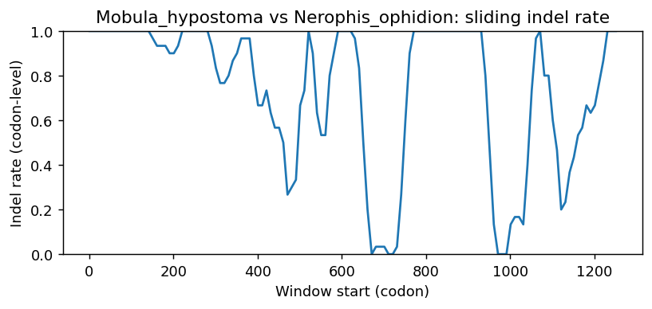

Ortholog Divergence Report
Input: WNT2.valid.longest.fa · N sequences: 590 · Aligned length: 1257 codons
Reference: Mobula_hypostoma
Quick risk overview
- LOW: 0
- INTERMEDIATE: 0
- HIGH: 173755


Composition & complexity per sequence
Saved as per_sequence_composition.csv. High low-complexity or repeat content can reduce BLAST sensitivity due to soft masking.
| id | GC | GC skew | CpG dens. | AA LCR frac | NT repeat frac | AA len | CDS len |
|---|---|---|---|---|---|---|---|
| Mobula_hypostoma | 0.48075 | 0.13281 | 0.03383 | 0.0 | 0.75305 | 355 | 1065 |
| Chrysemys_picta_bellii | 0.53538 | 0.16522 | 0.04473 | 0.0 | 0.73091 | 358 | 1074 |
| Camarhynchus_parvulus | 0.58287 | 0.09585 | 0.04753 | 0.0419 | 0.70112 | 358 | 1074 |
| Homo_sapiens | 0.54907 | 0.086 | 0.03244 | 0.05278 | 0.7713 | 360 | 1080 |
| Etheostoma_spectabile | 0.60476 | 0.04567 | 0.07817 | 0.0 | 0.7581 | 350 | 1050 |
| Anas_acuta | 0.61453 | 0.11515 | 0.07642 | 0.06983 | 0.74209 | 358 | 1074 |
| Phyllopteryx_taeniolatus | 0.67914 | 0.04199 | 0.13202 | 0.1016 | 0.83779 | 374 | 1122 |
| Mirounga_angustirostris | 0.58148 | 0.07325 | 0.05005 | 0.05278 | 0.75741 | 360 | 1080 |
| Pleurodeles_waltl | 0.52025 | 0.11776 | 0.0343 | 0.0 | 0.75182 | 321 | 963 |
| Scophthalmus_maximus | 0.63417 | 0.01611 | 0.08922 | 0.0 | 0.78273 | 359 | 1077 |
| Ambystoma_mexicanum | 0.56179 | 0.08688 | 0.05405 | 0.0 | 0.79647 | 321 | 963 |
| Gracilinanus_agilis | 0.53796 | 0.08434 | 0.03522 | 0.0 | 0.69907 | 360 | 1080 |
| Carassius_gibelio | 0.51619 | 0.11439 | 0.03813 | 0.0 | 0.82952 | 350 | 1050 |
| Papio_anubis | 0.55185 | 0.07718 | 0.03058 | 0.05278 | 0.77593 | 360 | 1080 |
| Etheostoma_cragini | 0.60095 | 0.04596 | 0.07436 | 0.0 | 0.7581 | 350 | 1050 |
| Perognathus_longimembris_pacificus | 0.56019 | 0.09091 | 0.03707 | 0.05278 | 0.77037 | 360 | 1080 |
| Microcebus_murinus | 0.56667 | 0.05556 | 0.03892 | 0.05278 | 0.76759 | 360 | 1080 |
| Sinocyclocheilus_rhinocerous | 0.51905 | 0.1156 | 0.03908 | 0.0 | 0.82762 | 350 | 1050 |
| Pteropus_alecto | 0.55926 | 0.06954 | 0.03892 | 0.05 | 0.77315 | 360 | 1080 |
| Rhinopithecus_roxellana | 0.55185 | 0.08054 | 0.03429 | 0.05278 | 0.77222 | 360 | 1080 |
| Trematomus_bernacchii | 0.63133 | 0.08926 | 0.08031 | 0.03725 | 0.80898 | 349 | 1047 |
| Onychostoma_macrolepis | 0.51619 | 0.1107 | 0.04004 | 0.0 | 0.82571 | 350 | 1050 |
| Canis_lupus_familiaris | 0.6037 | 0.07975 | 0.0658 | 0.04167 | 0.77593 | 360 | 1080 |
| Carlito_syrichta | 0.54783 | 0.09559 | 0.03427 | 0.0 | 0.75327 | 331 | 993 |
| Mugil_cephalus | 0.61333 | 0.01863 | 0.07531 | 0.0 | 0.76762 | 350 | 1050 |
| Neoarius_graeffei | 0.56 | 0.08163 | 0.04385 | 0.0 | 0.74952 | 350 | 1050 |
| Silurus_meridionalis | 0.54952 | 0.08839 | 0.0448 | 0.0 | 0.72095 | 350 | 1050 |
| Mustela_putorius_furo | 0.57685 | 0.06581 | 0.04634 | 0.05278 | 0.7713 | 360 | 1080 |
| Eumetopias_jubatus | 0.58426 | 0.07132 | 0.05375 | 0.05278 | 0.75185 | 360 | 1080 |
| Xiphophorus_couchianus | 0.58762 | 0.01783 | 0.05624 | 0.0 | 0.76 | 350 | 1050 |
| Ceratotherium_simum_simum | 0.56389 | 0.06732 | 0.03892 | 0.05 | 0.74537 | 360 | 1080 |
| Equus_asinus | 0.56204 | 0.08072 | 0.03614 | 0.05278 | 0.73611 | 360 | 1080 |
| Monodelphis_domestica | 0.53611 | 0.0639 | 0.03614 | 0.03333 | 0.69815 | 360 | 1080 |
| Pleuronectes_platessa | 0.60566 | 0.04526 | 0.06637 | 0.0 | 0.79134 | 377 | 1131 |
| Heterodontus_francisci | 0.473 | 0.11811 | 0.02889 | 0.04749 | 0.71415 | 358 | 1074 |
| Antechinus_flavipes | 0.52407 | 0.07067 | 0.02966 | 0.03333 | 0.70093 | 360 | 1080 |
| Trichechus_manatus_latirostris | 0.57685 | 0.05618 | 0.04541 | 0.03889 | 0.76759 | 360 | 1080 |
| Monodon_monoceros | 0.57315 | 0.05977 | 0.04263 | 0.04722 | 0.74167 | 360 | 1080 |
| Oryzias_melastigma | 0.60571 | 0.04088 | 0.06864 | 0.0 | 0.78476 | 350 | 1050 |
| Pan_troglodytes | 0.54815 | 0.0777 | 0.03058 | 0.05278 | 0.74815 | 360 | 1080 |
| Stegastes_partitus | 0.58762 | 0.04376 | 0.06387 | 0.0 | 0.76762 | 350 | 1050 |
| Myxocyprinus_asiaticus | 0.52095 | 0.11517 | 0.03718 | 0.0 | 0.81333 | 350 | 1050 |
| Vicugna_pacos | 0.57222 | 0.08091 | 0.04449 | 0.04722 | 0.72315 | 360 | 1080 |
| Cygnus_olor | 0.60521 | 0.11077 | 0.0699 | 0.07542 | 0.72719 | 358 | 1074 |
| Lagenorhynchus_albirostris | 0.57222 | 0.06796 | 0.04356 | 0.04722 | 0.74722 | 360 | 1080 |
| Oryzias_latipes | 0.60286 | 0.0237 | 0.06864 | 0.0 | 0.81619 | 350 | 1050 |
| Pseudorca_crassidens | 0.575 | 0.0628 | 0.04541 | 0.04722 | 0.74352 | 360 | 1080 |
| Leopardus_geoffroyi | 0.56019 | 0.07438 | 0.03985 | 0.05278 | 0.73796 | 360 | 1080 |
| Pygocentrus_nattereri | 0.59524 | 0.0592 | 0.06387 | 0.0 | 0.72571 | 350 | 1050 |
| Mauremys_reevesii | 0.53818 | 0.15571 | 0.0438 | 0.0 | 0.70391 | 358 | 1074 |
| Saccopteryx_bilineata | 0.60556 | 0.06422 | 0.05746 | 0.05 | 0.76574 | 360 | 1080 |
| Strigops_habroptila | 0.57821 | 0.12077 | 0.05405 | 0.0419 | 0.73557 | 358 | 1074 |
| Mauremys_mutica | 0.53445 | 0.16028 | 0.04287 | 0.0 | 0.7067 | 358 | 1074 |
| Nyctereutes_procyonoides | 0.60278 | 0.07527 | 0.06487 | 0.04167 | 0.77778 | 360 | 1080 |
| Malurus_melanocephalus | 0.56983 | 0.11438 | 0.04846 | 0.0419 | 0.71043 | 358 | 1074 |
| Caloenas_nicobarica | 0.5689 | 0.09656 | 0.05126 | 0.0419 | 0.71508 | 358 | 1074 |
| Protopterus_annectens | 0.45311 | 0.14754 | 0.01766 | 0.03343 | 0.74002 | 359 | 1077 |
| Eleginops_maclovinus | 0.64952 | 0.04692 | 0.08484 | 0.0 | 0.75048 | 350 | 1050 |
| Scyliorhinus_canicula | 0.50466 | 0.08118 | 0.03448 | 0.03352 | 0.72812 | 358 | 1074 |
| Oncorhynchus_kisutch | 0.59714 | 0.05901 | 0.07436 | 0.0 | 0.72571 | 350 | 1050 |
| Heterocephalus_glaber | 0.54537 | 0.06961 | 0.0278 | 0.0 | 0.77963 | 360 | 1080 |
| Sparus_aurata | 0.593 | 0.01553 | 0.06636 | 0.0 | 0.76611 | 362 | 1086 |
| Capra_hircus | 0.56389 | 0.06732 | 0.03892 | 0.0 | 0.73889 | 360 | 1080 |
| Polypterus_senegalus | 0.51117 | 0.0929 | 0.03262 | 0.06983 | 0.79423 | 358 | 1074 |
| Ctenopharyngodon_idella | 0.51143 | 0.12104 | 0.03527 | 0.0 | 0.82381 | 350 | 1050 |
| Propithecus_coquereli | 0.56204 | 0.06096 | 0.03522 | 0.05278 | 0.74907 | 360 | 1080 |
| Electrophorus_electricus | 0.55619 | 0.08562 | 0.05148 | 0.0 | 0.75905 | 350 | 1050 |
| Falco_rusticolus | 0.56518 | 0.0972 | 0.04939 | 0.0419 | 0.71881 | 358 | 1074 |
| Pipistrellus_kuhlii | 0.65093 | 0.03272 | 0.08712 | 0.04722 | 0.775 | 360 | 1080 |
| Catharus_ustulatus | 0.56797 | 0.09836 | 0.04473 | 0.0 | 0.68994 | 358 | 1074 |
| Notolabrus_celidotus | 0.60381 | 0.04101 | 0.07054 | 0.0 | 0.78286 | 350 | 1050 |
| Oreochromis_aureus | 0.56762 | 0.05369 | 0.04194 | 0.0 | 0.78476 | 350 | 1050 |
| Ictalurus_furcatus | 0.55619 | 0.07192 | 0.04194 | 0.0 | 0.72952 | 350 | 1050 |
| Pyrgilauda_ruficollis | 0.57542 | 0.08738 | 0.0466 | 0.0419 | 0.72626 | 358 | 1074 |
| Rhinatrema_bivittatum | 0.48852 | 0.09023 | 0.02849 | 0.04408 | 0.73095 | 363 | 1089 |
| Marmota_marmota_marmota | 0.55648 | 0.06156 | 0.03429 | 0.05 | 0.78056 | 360 | 1080 |
| Anser_cygnoides | 0.60521 | 0.11077 | 0.0699 | 0.07542 | 0.73464 | 358 | 1074 |
| Hemiscyllium_ocellatum | 0.47114 | 0.12253 | 0.02796 | 0.03352 | 0.75885 | 358 | 1074 |
| Alosa_alosa | 0.58428 | 0.05024 | 0.07488 | 0.0 | 0.7661 | 352 | 1056 |
| Neomonachus_schauinslandi | 0.58056 | 0.06858 | 0.04912 | 0.05278 | 0.75741 | 360 | 1080 |
| Pezoporus_occidentalis | 0.57076 | 0.1354 | 0.04939 | 0.03352 | 0.71322 | 358 | 1074 |
| Periophthalmus_magnuspinnatus | 0.59354 | 0.12 | 0.06844 | 0.03704 | 0.78917 | 351 | 1053 |
| Mustela_nigripes | 0.57685 | 0.06581 | 0.04634 | 0.05278 | 0.7713 | 360 | 1080 |
| Heptranchias_perlo | 0.48138 | 0.13346 | 0.03169 | 0.0 | 0.75233 | 358 | 1074 |
| Seriola_dumerili | 0.63619 | 0.02695 | 0.09247 | 0.0 | 0.78667 | 350 | 1050 |
| Trichomycterus_rosablanca | 0.52952 | 0.07914 | 0.04004 | 0.0 | 0.79143 | 350 | 1050 |
| Conger_conger | 0.58287 | 0.10543 | 0.06337 | 0.0 | 0.78212 | 358 | 1074 |
| Elephas_maximus_indicus | 0.56481 | 0.06885 | 0.04078 | 0.03889 | 0.78426 | 360 | 1080 |
| Scleropages_formosus | 0.6236 | 0.04505 | 0.07873 | 0.0 | 0.73127 | 356 | 1068 |
| Bombina_bombina | 0.45587 | 0.19818 | 0.02183 | 0.0 | 0.74455 | 321 | 963 |
| Pezoporus_flaviventris | 0.57076 | 0.1354 | 0.04939 | 0.03352 | 0.71322 | 358 | 1074 |
| Parus_major | 0.56238 | 0.10927 | 0.04753 | 0.0419 | 0.72905 | 358 | 1074 |
| Camelus_ferus | 0.56667 | 0.0817 | 0.04171 | 0.04722 | 0.71944 | 360 | 1080 |
| Dermochelys_coriacea | 0.52886 | 0.16549 | 0.04194 | 0.0 | 0.71695 | 358 | 1074 |
| Perca_fluviatilis | 0.61619 | 0.05719 | 0.08198 | 0.0 | 0.74857 | 350 | 1050 |
| Octodon_degus | 0.55 | 0.08754 | 0.02873 | 0.0 | 0.77593 | 360 | 1080 |
| Hemibagrus_wyckioides | 0.56095 | 0.08998 | 0.04671 | 0.0 | 0.75714 | 350 | 1050 |
| Chrysochloris_asiatica | 0.56667 | 0.06863 | 0.03522 | 0.03889 | 0.75185 | 360 | 1080 |
| Syngnathus_acus | 0.65429 | 0.08588 | 0.11249 | 0.03429 | 0.76857 | 350 | 1050 |
| Emydura_macquarii_macquarii | 0.53631 | 0.14931 | 0.04194 | 0.0 | 0.74209 | 358 | 1074 |
| Pongo_abelii | 0.55 | 0.07744 | 0.03244 | 0.05278 | 0.76111 | 360 | 1080 |
| Phaenicophaeus_curvirostris | 0.55866 | 0.09 | 0.0466 | 0.11173 | 0.71508 | 358 | 1074 |
| Mesoplodon_densirostris | 0.57222 | 0.06796 | 0.04634 | 0.04722 | 0.75463 | 360 | 1080 |
| Dipodomys_merriami | 0.55741 | 0.09635 | 0.03429 | 0.05 | 0.77963 | 360 | 1080 |
| Nyctibius_grandis | 0.57169 | 0.10423 | 0.05405 | 0.0419 | 0.70205 | 358 | 1074 |
| Phyllostomus_hastatus | 0.55556 | 0.09 | 0.03058 | 0.03889 | 0.75463 | 360 | 1080 |
| Lepus_europaeus | 0.55833 | 0.07463 | 0.03522 | 0.05 | 0.75926 | 360 | 1080 |
| Syngnathus_scovelli | 0.65429 | 0.08297 | 0.1163 | 0.03429 | 0.78952 | 350 | 1050 |
| Gymnogyps_californianus | 0.5689 | 0.10638 | 0.05219 | 0.0419 | 0.71695 | 358 | 1074 |
| Channa_argus | 0.6 | 0.06984 | 0.06959 | 0.0 | 0.75429 | 350 | 1050 |
| Brachionichthys_hirsutus | 0.66373 | 0.03102 | 0.10206 | 0.0 | 0.77745 | 340 | 1020 |
| Parambassis_ranga | 0.61143 | 0.01558 | 0.0734 | 0.0 | 0.77333 | 350 | 1050 |
| Micropterus_dolomieu | 0.5981 | 0.04459 | 0.07245 | 0.0 | 0.76952 | 350 | 1050 |
| Elephantulus_edwardii | 0.59218 | 0.05346 | 0.05312 | 0.0 | 0.79516 | 358 | 1074 |
| Corythoichthys_intestinalis | 0.65534 | 0.07781 | 0.12287 | 0.07365 | 0.83853 | 353 | 1059 |
| Pseudorasbora_parva | 0.50762 | 0.12946 | 0.03622 | 0.0 | 0.82095 | 350 | 1050 |
| Equus_caballus | 0.56296 | 0.08224 | 0.038 | 0.05278 | 0.73981 | 360 | 1080 |
| Lepisosteus_oculatus | 0.52421 | 0.10124 | 0.03728 | 0.0 | 0.76816 | 358 | 1074 |
| Marmota_monax | 0.55463 | 0.06177 | 0.03336 | 0.05 | 0.78704 | 360 | 1080 |
| Arvicanthis_niloticus | 0.54907 | 0.05228 | 0.03244 | 0.05278 | 0.77407 | 360 | 1080 |
| Cololabis_saira | 0.67142 | 0.00141 | 0.10361 | 0.0 | 0.78443 | 351 | 1053 |
| Pimephales_promelas | 0.51619 | 0.1107 | 0.04004 | 0.0 | 0.81714 | 350 | 1050 |
| Solea_senegalensis | 0.61823 | 0.04147 | 0.0865 | 0.0 | 0.80722 | 351 | 1053 |
| Esox_lucius | 0.59524 | 0.072 | 0.07531 | 0.0 | 0.74476 | 350 | 1050 |
| Meles_meles | 0.57778 | 0.07692 | 0.04727 | 0.05278 | 0.73611 | 360 | 1080 |
| Geotrypetes_seraphini | 0.47768 | 0.14115 | 0.02091 | 0.0 | 0.75404 | 351 | 1053 |
| Denticeps_clupeoides | 0.65879 | 0.06773 | 0.09019 | 0.06299 | 0.70079 | 381 | 1143 |
| Pseudoliparis_swirei | 0.68768 | 0.06389 | 0.12237 | 0.0 | 0.80325 | 349 | 1047 |
| Emys_orbicularis | 0.53445 | 0.16725 | 0.0438 | 0.0 | 0.72905 | 358 | 1074 |
| Bos_mutus | 0.56019 | 0.07438 | 0.03985 | 0.0 | 0.74444 | 360 | 1080 |
| Acanthopagrus_latus | 0.61238 | 0.0451 | 0.07626 | 0.0 | 0.76381 | 350 | 1050 |
| Nycticebus_coucang | 0.55926 | 0.05629 | 0.03614 | 0.05 | 0.74815 | 360 | 1080 |
| Ailuropoda_melanoleuca | 0.58056 | 0.06539 | 0.04819 | 0.05278 | 0.76481 | 360 | 1080 |
| Corvus_moneduloides | 0.56611 | 0.11513 | 0.04939 | 0.0419 | 0.69832 | 358 | 1074 |
| Cuculus_canorus | 0.55307 | 0.10438 | 0.04567 | 0.07821 | 0.71229 | 358 | 1074 |
| Synchiropus_splendidus | 0.62286 | 0.04587 | 0.09342 | 0.0 | 0.77524 | 350 | 1050 |
| Callithrix_jacchus | 0.54907 | 0.09612 | 0.03151 | 0.05 | 0.7537 | 360 | 1080 |
| Echeneis_naucrates | 0.62095 | 0.01227 | 0.08484 | 0.0 | 0.78762 | 350 | 1050 |
| Danio_rerio | 0.53238 | 0.09481 | 0.0429 | 0.0 | 0.78857 | 350 | 1050 |
| Molothrus_aeneus | 0.57635 | 0.10178 | 0.04473 | 0.0419 | 0.71229 | 358 | 1074 |
| Chionomys_nivalis | 0.56296 | 0.07237 | 0.04263 | 0.05 | 0.7787 | 360 | 1080 |
| Numida_meleagris | 0.62766 | 0.10169 | 0.07631 | 0.03191 | 0.75887 | 376 | 1128 |
| Lagopus_muta | 0.62234 | 0.10541 | 0.07187 | 0.03191 | 0.74202 | 376 | 1128 |
| Apteryx_rowi | 0.57116 | 0.12787 | 0.0553 | 0.04213 | 0.73315 | 356 | 1068 |
| Mastomys_coucha | 0.54352 | 0.07325 | 0.03151 | 0.05278 | 0.74722 | 360 | 1080 |
| Archocentrus_centrarchus | 0.5781 | 0.04778 | 0.04862 | 0.0 | 0.77238 | 350 | 1050 |
| Peromyscus_maniculatus_bairdii | 0.56574 | 0.04746 | 0.03707 | 0.08611 | 0.77037 | 360 | 1080 |
| Passer_domesticus | 0.57356 | 0.0974 | 0.04753 | 0.0419 | 0.72812 | 358 | 1074 |
| Leucoraja_erinaceus | 0.50704 | 0.0963 | 0.03102 | 0.0 | 0.75399 | 355 | 1065 |
| Orycteropus_afer_afer | 0.57685 | 0.05297 | 0.04356 | 0.05278 | 0.78796 | 360 | 1080 |
| Scomber_scombrus | 0.61333 | 0.03416 | 0.08675 | 0.0 | 0.8019 | 350 | 1050 |
| Cynoglossus_semilaevis | 0.60422 | 0.03343 | 0.0671 | 0.06612 | 0.77686 | 363 | 1089 |
| Bufo_bufo | 0.44259 | 0.21757 | 0.01854 | 0.0 | 0.75556 | 360 | 1080 |
| Otolemur_garnettii | 0.56204 | 0.0313 | 0.03614 | 0.05 | 0.7463 | 360 | 1080 |
| Seriola_aureovittata | 0.63524 | 0.02549 | 0.09056 | 0.0 | 0.78667 | 350 | 1050 |
| Panthera_leo | 0.56019 | 0.06777 | 0.04078 | 0.05278 | 0.73611 | 360 | 1080 |
| Sylvia_atricapilla | 0.57076 | 0.1093 | 0.04753 | 0.0419 | 0.73091 | 358 | 1074 |
| Enhydra_lutris_kenyoni | 0.57963 | 0.07348 | 0.04727 | 0.05278 | 0.74907 | 360 | 1080 |
| Callorhinus_ursinus | 0.58333 | 0.07302 | 0.05283 | 0.05278 | 0.75185 | 360 | 1080 |
| Motacilla_alba_alba | 0.57728 | 0.09677 | 0.05033 | 0.0419 | 0.71788 | 358 | 1074 |
| Nanorana_parkeri | 0.43513 | 0.19725 | 0.02098 | 0.0 | 0.73453 | 334 | 1002 |
| Tachysurus_fulvidraco | 0.54095 | 0.10211 | 0.03813 | 0.0 | 0.74095 | 350 | 1050 |
| Pelodiscus_sinensis | 0.52886 | 0.16549 | 0.04473 | 0.03352 | 0.74488 | 358 | 1074 |
| Sander_lucioperca | 0.61333 | 0.04658 | 0.08198 | 0.0 | 0.75238 | 350 | 1050 |
| Equus_przewalskii | 0.56296 | 0.08224 | 0.038 | 0.05278 | 0.73981 | 360 | 1080 |
| Xenopus_tropicalis | 0.45662 | 0.124 | 0.01554 | 0.06849 | 0.73516 | 365 | 1095 |
| Capricornis_sumatraensis | 0.56296 | 0.06908 | 0.038 | 0.0 | 0.73333 | 360 | 1080 |
| Nerophis_lumbriciformis | 0.65521 | 0.04373 | 0.09656 | 0.0 | 0.82999 | 349 | 1047 |
| Prionailurus_viverrinus | 0.56111 | 0.07261 | 0.03985 | 0.05278 | 0.73796 | 360 | 1080 |
| Theropithecus_gelada | 0.55185 | 0.07718 | 0.03058 | 0.05278 | 0.77593 | 360 | 1080 |
| Sinocyclocheilus_grahami | 0.52095 | 0.11517 | 0.03908 | 0.0 | 0.82476 | 350 | 1050 |
| Salmo_trutta | 0.59905 | 0.05246 | 0.07436 | 0.0 | 0.7219 | 350 | 1050 |
| Rhea_pennata | 0.58566 | 0.12878 | 0.06337 | 0.0419 | 0.74674 | 358 | 1074 |
| Cyanistes_caeruleus | 0.56667 | 0.11943 | 0.04954 | 0.04545 | 0.73232 | 330 | 990 |
| Tachysurus_vachellii | 0.54476 | 0.09091 | 0.03908 | 0.0 | 0.74667 | 350 | 1050 |
| Empidonax_traillii | 0.56238 | 0.10596 | 0.05033 | 0.0419 | 0.70298 | 358 | 1074 |
| Ammospiza_nelsoni | 0.57728 | 0.09677 | 0.04753 | 0.0419 | 0.71229 | 358 | 1074 |
| Arvicola_amphibius | 0.55556 | 0.06667 | 0.038 | 0.04722 | 0.78426 | 360 | 1080 |
| Peromyscus_eremicus | 0.55556 | 0.05 | 0.03244 | 0.05278 | 0.77222 | 360 | 1080 |
| Poecilia_mexicana | 0.58952 | 0.01777 | 0.05338 | 0.0 | 0.74 | 350 | 1050 |
| Malaclemys_terrapin_pileata | 0.53538 | 0.16522 | 0.0438 | 0.0 | 0.73091 | 358 | 1074 |
| Talpa_occidentalis | 0.56019 | 0.07769 | 0.03522 | 0.04167 | 0.71759 | 360 | 1080 |
| Cyrtonyx_montezumae | 0.62589 | 0.10765 | 0.0772 | 0.03191 | 0.75532 | 376 | 1128 |
| Austrofundulus_limnaeus | 0.6256 | 0.03511 | 0.07075 | 0.0 | 0.73352 | 349 | 1047 |
| Cheilinus_undulatus | 0.56762 | 0.07047 | 0.05148 | 0.0 | 0.76381 | 350 | 1050 |
| Thunnus_thynnus | 0.61524 | 0.05263 | 0.08389 | 0.0 | 0.78667 | 350 | 1050 |
| Grus_americana | 0.56425 | 0.09901 | 0.05219 | 0.0419 | 0.69274 | 358 | 1074 |
| Balaenoptera_musculus | 0.56852 | 0.06515 | 0.04263 | 0.04722 | 0.75463 | 360 | 1080 |
| Nomascus_leucogenys | 0.55185 | 0.08054 | 0.03429 | 0.05278 | 0.7537 | 360 | 1080 |
| Mus_caroli | 0.55 | 0.07744 | 0.02873 | 0.05278 | 0.77407 | 360 | 1080 |
| Labrus_mixtus | 0.60857 | 0.04538 | 0.07817 | 0.04 | 0.77524 | 350 | 1050 |
| Microtus_ochrogaster | 0.55833 | 0.06799 | 0.04171 | 0.05 | 0.79352 | 360 | 1080 |
| Solea_solea | 0.61728 | 0.04923 | 0.08555 | 0.0 | 0.79107 | 351 | 1053 |
| Melospiza_melodia_melodia | 0.57821 | 0.10145 | 0.04753 | 0.0419 | 0.72905 | 358 | 1074 |
| Clarias_gariepinus | 0.54762 | 0.12348 | 0.04385 | 0.0 | 0.74 | 350 | 1050 |
| Thunnus_albacares | 0.61714 | 0.04938 | 0.0858 | 0.0 | 0.78667 | 350 | 1050 |
| Lynx_rufus | 0.56019 | 0.08099 | 0.03892 | 0.05278 | 0.72685 | 360 | 1080 |
| Leptonychotes_weddellii | 0.60498 | 0.05098 | 0.05938 | 0.06762 | 0.76987 | 281 | 843 |
| Chelonia_mydas | 0.53073 | 0.16842 | 0.03914 | 0.0 | 0.71881 | 358 | 1074 |
| Chamaea_fasciata | 0.57449 | 0.10211 | 0.05126 | 0.0419 | 0.7067 | 358 | 1074 |
| Indicator_indicator | 0.55307 | 0.09764 | 0.04473 | 0.0419 | 0.73743 | 358 | 1074 |
| Vulpes_vulpes | 0.60648 | 0.07176 | 0.06673 | 0.04167 | 0.76389 | 360 | 1080 |
| Accipiter_gentilis | 0.56611 | 0.09539 | 0.05405 | 0.0419 | 0.7365 | 358 | 1074 |
| Poecilia_formosa | 0.59238 | 0.01608 | 0.0572 | 0.0 | 0.7419 | 350 | 1050 |
| Sturnus_vulgaris | 0.56797 | 0.10492 | 0.04287 | 0.0419 | 0.73464 | 358 | 1074 |
| Bubalus_kerabau | 0.56019 | 0.07438 | 0.03985 | 0.0 | 0.74444 | 360 | 1080 |
| Mesocricetus_auratus | 0.55093 | 0.06891 | 0.03058 | 0.05 | 0.77407 | 360 | 1080 |
| Clupea_harengus | 0.58286 | 0.05882 | 0.06292 | 0.0 | 0.76952 | 350 | 1050 |
| Chanodichthys_erythropterus | 0.51524 | 0.12754 | 0.03527 | 0.0 | 0.82095 | 350 | 1050 |
| Takifugu_flavidus | 0.65143 | 0.0117 | 0.09152 | 0.0 | 0.73619 | 350 | 1050 |
| Columba_livia | 0.56797 | 0.09508 | 0.05219 | 0.0419 | 0.71043 | 358 | 1074 |
| Entelurus_aequoreus | 0.65553 | 0.0 | 0.09634 | 0.02864 | 0.82975 | 419 | 1257 |
| Peromyscus_californicus_insignis | 0.55185 | 0.05369 | 0.03151 | 0.05278 | 0.78333 | 360 | 1080 |
| Ficedula_albicollis | 0.56299 | 0.11287 | 0.04911 | 0.05017 | 0.74359 | 299 | 897 |
| Marmota_flaviventris | 0.55648 | 0.06156 | 0.03429 | 0.05 | 0.78056 | 360 | 1080 |
| Dendropsophus_ebraccatus | 0.44169 | 0.19335 | 0.01471 | 0.06612 | 0.76217 | 363 | 1089 |
| Labrus_bergylta | 0.60952 | 0.04688 | 0.08008 | 0.04 | 0.77333 | 350 | 1050 |
| Puma_concolor | 0.55488 | 0.10345 | 0.04032 | 0.0 | 0.7432 | 331 | 993 |
| Ovis_aries | 0.56296 | 0.06908 | 0.038 | 0.0 | 0.73889 | 360 | 1080 |
| Falco_cherrug | 0.56518 | 0.0972 | 0.04939 | 0.0419 | 0.71881 | 358 | 1074 |
| Castor_canadensis | 0.54352 | 0.07666 | 0.03336 | 0.05278 | 0.77593 | 360 | 1080 |
| Terrapene_triunguis | 0.53166 | 0.16287 | 0.04194 | 0.0 | 0.7365 | 358 | 1074 |
| Salarias_fasciatus | 0.6829 | 0.01259 | 0.10516 | 0.0 | 0.74499 | 349 | 1047 |
| Aotus_nancymaae | 0.55093 | 0.09244 | 0.03522 | 0.05 | 0.7463 | 360 | 1080 |
| Agelaius_phoeniceus | 0.57635 | 0.10178 | 0.04287 | 0.0419 | 0.69739 | 358 | 1074 |
| Ictalurus_punctatus | 0.55333 | 0.07057 | 0.03908 | 0.0 | 0.73333 | 350 | 1050 |
| Gopherus_evgoodei | 0.527 | 0.14134 | 0.03821 | 0.0 | 0.70764 | 358 | 1074 |
| Gallus_gallus | 0.63121 | 0.10393 | 0.08163 | 0.03191 | 0.75709 | 376 | 1128 |
| Astatotilapia_calliptera | 0.56762 | 0.04362 | 0.04099 | 0.0 | 0.78286 | 350 | 1050 |
| Zonotrichia_leucophrys_gambelii | 0.58194 | 0.0976 | 0.05033 | 0.0419 | 0.71415 | 358 | 1074 |
| Cygnus_atratus | 0.60615 | 0.10599 | 0.07083 | 0.07542 | 0.73091 | 358 | 1074 |
| Patagioenas_fasciata | 0.56611 | 0.08882 | 0.05126 | 0.0419 | 0.7095 | 358 | 1074 |
| Phodopus_roborovskii | 0.55093 | 0.07899 | 0.03058 | 0.05278 | 0.76481 | 360 | 1080 |
| Lontra_canadensis | 0.57963 | 0.07348 | 0.04634 | 0.05278 | 0.74722 | 360 | 1080 |
| Myripristis_murdjan | 0.59186 | 0.056 | 0.07109 | 0.0 | 0.80398 | 352 | 1056 |
| Dicentrarchus_labrax | 0.60952 | 0.06563 | 0.07722 | 0.0 | 0.7619 | 350 | 1050 |
| Paralichthys_olivaceus | 0.62095 | 0.03988 | 0.07436 | 0.0 | 0.78286 | 350 | 1050 |
| Phycodurus_eques | 0.67619 | 0.04507 | 0.1306 | 0.07143 | 0.85143 | 350 | 1050 |
| Canis_lupus_dingo | 0.59417 | 0.07994 | 0.06339 | 0.0 | 0.78 | 400 | 1200 |
| Apus_apus | 0.57449 | 0.11183 | 0.04939 | 0.0419 | 0.71322 | 358 | 1074 |
| Phocoena_sinus | 0.57222 | 0.06472 | 0.04263 | 0.04722 | 0.74352 | 360 | 1080 |
| Limanda_limanda | 0.62952 | 0.03782 | 0.07436 | 0.0 | 0.77619 | 350 | 1050 |
| Manis_pentadactyla | 0.58796 | 0.07717 | 0.0519 | 0.08889 | 0.7537 | 360 | 1080 |
| Galeopterus_variegatus | 0.55278 | 0.07203 | 0.03151 | 0.03333 | 0.78241 | 360 | 1080 |
| Neopelma_chrysocephalum | 0.55773 | 0.12187 | 0.04939 | 0.0419 | 0.71136 | 358 | 1074 |
| Gadus_morhua | 0.64857 | 0.03671 | 0.09247 | 0.03429 | 0.71905 | 350 | 1050 |
| Delphinus_delphis | 0.57407 | 0.06452 | 0.04541 | 0.04722 | 0.74352 | 360 | 1080 |
| Hippocampus_zosterae | 0.64634 | 0.05912 | 0.11473 | 0.03902 | 0.81951 | 410 | 1230 |
| Trichosurus_vulpecula | 0.52925 | 0.06667 | 0.03346 | 0.03343 | 0.67688 | 359 | 1077 |
| Carassius_auratus | 0.5181 | 0.11765 | 0.04004 | 0.0 | 0.82 | 350 | 1050 |
| Colossoma_macropomum | 0.59238 | 0.0418 | 0.06768 | 0.0 | 0.73619 | 350 | 1050 |
| Sapajus_apella | 0.54907 | 0.08938 | 0.03336 | 0.05 | 0.7463 | 360 | 1080 |
| Dryobates_pubescens | 0.55028 | 0.11675 | 0.04007 | 0.0419 | 0.72719 | 358 | 1074 |
| Eubalaena_glacialis | 0.56852 | 0.06189 | 0.04263 | 0.04722 | 0.76296 | 360 | 1080 |
| Lampris_incognitus | 0.59524 | 0.0624 | 0.0715 | 0.0 | 0.74381 | 350 | 1050 |
| Larimichthys_crocea | 0.5981 | 0.04459 | 0.06959 | 0.0 | 0.76571 | 350 | 1050 |
| Calidris_pugnax | 0.60056 | 0.08217 | 0.06151 | 0.0419 | 0.68901 | 358 | 1074 |
| Cervus_elaphus | 0.56481 | 0.05902 | 0.04263 | 0.0 | 0.73704 | 360 | 1080 |
| Falco_peregrinus | 0.56518 | 0.0972 | 0.04939 | 0.0419 | 0.71881 | 358 | 1074 |
| Haliaeetus_albicilla | 0.56611 | 0.10197 | 0.05312 | 0.0419 | 0.74953 | 358 | 1074 |
| Miniopterus_natalensis | 0.54722 | 0.08968 | 0.03151 | 0.04722 | 0.79167 | 360 | 1080 |
| Neogale_vison | 0.58241 | 0.062 | 0.05005 | 0.05278 | 0.75093 | 360 | 1080 |
| Pristis_pectinata | 0.4723 | 0.12922 | 0.03195 | 0.0 | 0.71737 | 355 | 1065 |
| Centrocercus_urophasianus | 0.62323 | 0.101 | 0.07365 | 0.03191 | 0.75443 | 376 | 1128 |
| Anguilla_rostrata | 0.58473 | 0.07325 | 0.06244 | 0.0 | 0.77561 | 358 | 1074 |
| Eulemur_rufifrons | 0.56481 | 0.0623 | 0.03614 | 0.05278 | 0.75093 | 360 | 1080 |
| Nipponia_nippon | 0.5386 | 0.08143 | 0.04829 | 0.03947 | 0.6807 | 380 | 1140 |
| Pseudochaenichthys_georgianus | 0.63133 | 0.08018 | 0.07935 | 0.03725 | 0.80802 | 349 | 1047 |
| Toxotes_jaculatrix | 0.62286 | 0.05199 | 0.08389 | 0.0 | 0.78095 | 350 | 1050 |
| Halichoerus_grypus | 0.58426 | 0.06498 | 0.0519 | 0.05278 | 0.75741 | 360 | 1080 |
| Rousettus_aegyptiacus | 0.59198 | 0.03972 | 0.05882 | 0.06017 | 0.73098 | 482 | 1446 |
| Chelonoidis_abingdonii | 0.527 | 0.15901 | 0.03728 | 0.0 | 0.7095 | 358 | 1074 |
| Lonchura_striata | 0.56518 | 0.11038 | 0.0466 | 0.0419 | 0.72067 | 358 | 1074 |
| Fukomys_damarensis | 0.55 | 0.07407 | 0.03429 | 0.0 | 0.775 | 360 | 1080 |
| Girardinichthys_multiradiatus | 0.55905 | 0.01874 | 0.04576 | 0.0 | 0.75714 | 350 | 1050 |
| Nothoprocta_perdicaria | 0.59311 | 0.10832 | 0.06244 | 0.0419 | 0.7216 | 358 | 1074 |
| Rhinopithecus_bieti | 0.55 | 0.08081 | 0.03336 | 0.05278 | 0.77222 | 360 | 1080 |
| Hypomesus_transpacificus | 0.59619 | 0.05112 | 0.07626 | 0.0 | 0.78095 | 350 | 1050 |
| Ornithorhynchus_anatinus | 0.60111 | 0.02611 | 0.06192 | 0.0554 | 0.74977 | 361 | 1083 |
| Puma_yagouaroundi | 0.55926 | 0.07947 | 0.038 | 0.05278 | 0.73056 | 360 | 1080 |
| Dama_dama | 0.56296 | 0.0625 | 0.04263 | 0.0 | 0.73704 | 360 | 1080 |
| Eptesicus_fuscus | 0.60926 | 0.06383 | 0.06302 | 0.05278 | 0.76759 | 360 | 1080 |
| Hypanus_sabinus | 0.47793 | 0.13556 | 0.03102 | 0.0 | 0.73991 | 355 | 1065 |
| Orcinus_orca | 0.57407 | 0.06452 | 0.04449 | 0.04722 | 0.74352 | 360 | 1080 |
| Microcaecilia_unicolor | 0.47276 | 0.15625 | 0.01479 | 0.0 | 0.72576 | 361 | 1083 |
| Myotis_davidii | 0.60556 | 0.06422 | 0.06117 | 0.05278 | 0.76481 | 360 | 1080 |
| Sciurus_carolinensis | 0.56296 | 0.05921 | 0.03892 | 0.05 | 0.79167 | 360 | 1080 |
| Phasianus_colchicus | 0.625 | 0.10638 | 0.07631 | 0.07181 | 0.73316 | 376 | 1128 |
| Rhinichthys_klamathensis_goyatoka | 0.51238 | 0.11152 | 0.03622 | 0.0 | 0.8181 | 350 | 1050 |
| Panthera_tigris | 0.55926 | 0.06954 | 0.04078 | 0.05278 | 0.73796 | 360 | 1080 |
| Phalacrocorax_carbo | 0.56704 | 0.0936 | 0.05312 | 0.0419 | 0.70484 | 358 | 1074 |
| Cricetulus_griseus | 0.54352 | 0.07325 | 0.02502 | 0.05 | 0.77407 | 360 | 1080 |
| Ochotona_curzoniae | 0.55278 | 0.06198 | 0.04356 | 0.07222 | 0.76759 | 360 | 1080 |
| Suncus_etruscus | 0.55771 | 0.07947 | 0.03327 | 0.0 | 0.74977 | 361 | 1083 |
| Serinus_canaria | 0.57635 | 0.12116 | 0.04939 | 0.0419 | 0.71974 | 358 | 1074 |
| Aquila_chrysaetos_chrysaetos | 0.56983 | 0.0915 | 0.05685 | 0.0419 | 0.73743 | 358 | 1074 |
| Sebastes_umbrosus | 0.62857 | 0.02424 | 0.08866 | 0.0 | 0.76571 | 350 | 1050 |
| Molothrus_ater | 0.57635 | 0.10178 | 0.04473 | 0.0419 | 0.71229 | 358 | 1074 |
| Vombatus_ursinus | 0.52856 | 0.0871 | 0.03072 | 0.03069 | 0.68116 | 391 | 1173 |
| Cervus_canadensis | 0.56481 | 0.05902 | 0.04263 | 0.0 | 0.73704 | 360 | 1080 |
| Scomber_japonicus | 0.61143 | 0.02804 | 0.08389 | 0.0 | 0.81714 | 350 | 1050 |
| Boleophthalmus_pectinirostris | 0.62393 | 0.09589 | 0.0808 | 0.04274 | 0.81766 | 351 | 1053 |
| Epinephelus_moara | 0.58198 | 0.00746 | 0.06522 | 0.0 | 0.76873 | 307 | 921 |
| Ochotona_princeps | 0.55741 | 0.06312 | 0.04634 | 0.07222 | 0.77315 | 360 | 1080 |
| Danio_aesculapii | 0.53333 | 0.08929 | 0.04385 | 0.0 | 0.79048 | 350 | 1050 |
| Osmerus_mordax | 0.59333 | 0.03371 | 0.07531 | 0.0 | 0.77714 | 350 | 1050 |
| Calypte_anna | 0.5568 | 0.13043 | 0.04101 | 0.0 | 0.68622 | 358 | 1074 |
| Erinaceus_europaeus | 0.54478 | 0.08814 | 0.03142 | 0.04709 | 0.78024 | 361 | 1083 |
| Saccopteryx_leptura | 0.60648 | 0.05649 | 0.06024 | 0.05 | 0.76944 | 360 | 1080 |
| Manacus_candei | 0.55866 | 0.12333 | 0.04939 | 0.0419 | 0.71601 | 358 | 1074 |
| Cinclus_cinclus | 0.56331 | 0.11074 | 0.0438 | 0.0419 | 0.70019 | 358 | 1074 |
| Triplophysa_rosa | 0.51416 | 0.09769 | 0.0457 | 0.0 | 0.77352 | 365 | 1095 |
| Anomalospiza_imberbis | 0.56611 | 0.10526 | 0.04753 | 0.0419 | 0.71229 | 358 | 1074 |
| Melozone_crissalis | 0.58287 | 0.10224 | 0.05033 | 0.0419 | 0.71322 | 358 | 1074 |
| Onychostruthus_taczanowskii | 0.57263 | 0.09268 | 0.04846 | 0.0419 | 0.71322 | 358 | 1074 |
| Corvus_hawaiiensis | 0.56331 | 0.12066 | 0.0466 | 0.0419 | 0.69832 | 358 | 1074 |
| Lepidothrix_coronata | 0.55959 | 0.12146 | 0.04753 | 0.0419 | 0.72253 | 358 | 1074 |
| Globicephala_melas | 0.5713 | 0.06321 | 0.04356 | 0.04722 | 0.74352 | 360 | 1080 |
| Xiphias_gladius | 0.63048 | 0.05438 | 0.09342 | 0.0 | 0.80667 | 350 | 1050 |
| Gambusia_affinis | 0.5781 | 0.02142 | 0.05148 | 0.0 | 0.76952 | 350 | 1050 |
| Chinchilla_lanigera | 0.57778 | 0.07051 | 0.04356 | 0.03611 | 0.80093 | 360 | 1080 |
| Opisthocomus_hoazin | 0.51515 | 0.11765 | 0.04767 | 0.0 | 0.67857 | 308 | 924 |
| Rhinolophus_ferrumequinum | 0.58056 | 0.06858 | 0.05375 | 0.03889 | 0.78426 | 360 | 1080 |
| Ursus_americanus | 0.58611 | 0.06477 | 0.05283 | 0.05278 | 0.75833 | 360 | 1080 |
| Pipra_filicauda | 0.56238 | 0.12252 | 0.04939 | 0.0419 | 0.72533 | 358 | 1074 |
| Taeniopygia_guttata | 0.56331 | 0.11074 | 0.04753 | 0.0419 | 0.72067 | 358 | 1074 |
| Symphalangus_syndactylus | 0.55278 | 0.08543 | 0.03429 | 0.05278 | 0.7537 | 360 | 1080 |
| Pelobates_fuscus | 0.47974 | 0.15163 | 0.03318 | 0.0 | 0.74033 | 362 | 1086 |
| Moschus_berezovskii | 0.55833 | 0.07463 | 0.03707 | 0.0 | 0.74722 | 360 | 1080 |
| Corapipo_altera | 0.55866 | 0.11667 | 0.04939 | 0.0419 | 0.72346 | 358 | 1074 |
| Camelus_dromedarius | 0.56667 | 0.08497 | 0.04171 | 0.04722 | 0.7213 | 360 | 1080 |
| Ursus_maritimus | 0.58611 | 0.06793 | 0.05283 | 0.05278 | 0.75833 | 360 | 1080 |
| Oryctolagus_cuniculus | 0.56481 | 0.08525 | 0.04078 | 0.05 | 0.75926 | 360 | 1080 |
| Chaetura_pelagica | 0.5209 | 0.141 | 0.02602 | 0.0 | 0.68475 | 295 | 885 |
| Sphaeramia_orbicularis | 0.57048 | 0.07179 | 0.0572 | 0.0 | 0.77905 | 350 | 1050 |
| Cyprinodon_tularosa | 0.56952 | 0.0301 | 0.04862 | 0.0 | 0.75714 | 350 | 1050 |
| Prionailurus_bengalensis | 0.56111 | 0.07261 | 0.03985 | 0.05278 | 0.73796 | 360 | 1080 |
| Jaculus_jaculus | 0.53704 | 0.1 | 0.02595 | 0.08056 | 0.75463 | 360 | 1080 |
| Pteropus_giganteus | 0.55833 | 0.07131 | 0.038 | 0.05 | 0.7713 | 360 | 1080 |
| Tupaia_chinensis | 0.54722 | 0.07953 | 0.02688 | 0.05 | 0.74537 | 360 | 1080 |
| Odocoileus_virginianus | 0.56759 | 0.06036 | 0.04171 | 0.0 | 0.7463 | 360 | 1080 |
| Haemorhous_mexicanus | 0.57449 | 0.11831 | 0.04846 | 0.0419 | 0.72533 | 358 | 1074 |
| Grammomys_surdaster | 0.54167 | 0.05983 | 0.03058 | 0.03889 | 0.77407 | 360 | 1080 |
| Molossus_molossus | 0.5463 | 0.09831 | 0.03336 | 0.05 | 0.78056 | 360 | 1080 |
| Tyto_alba | 0.56704 | 0.09688 | 0.05219 | 0.0419 | 0.70391 | 358 | 1074 |
| Myotis_myotis | 0.60741 | 0.06707 | 0.06209 | 0.05278 | 0.76481 | 360 | 1080 |
| Phoca_vitulina | 0.58519 | 0.06646 | 0.0519 | 0.05278 | 0.75741 | 360 | 1080 |
| Struthio_camelus | 0.57169 | 0.13029 | 0.05965 | 0.0419 | 0.71788 | 358 | 1074 |
| Tachyglossus_aculeatus | 0.5896 | 0.03622 | 0.05948 | 0.0 | 0.76602 | 359 | 1077 |
| Ranitomeya_imitator | 0.45087 | 0.18534 | 0.02022 | 0.06612 | 0.75849 | 363 | 1089 |
| Felis_catus | 0.56111 | 0.07261 | 0.04078 | 0.05278 | 0.73796 | 360 | 1080 |
| Balaenoptera_acutorostrata | 0.56944 | 0.06341 | 0.04263 | 0.04722 | 0.75278 | 360 | 1080 |
| Hirundo_rustica | 0.56983 | 0.10131 | 0.05126 | 0.0419 | 0.7067 | 358 | 1074 |
| Ovis_canadensis | 0.56204 | 0.06755 | 0.03707 | 0.0 | 0.73889 | 360 | 1080 |
| Panthera_onca | 0.55833 | 0.06799 | 0.03985 | 0.05278 | 0.73241 | 360 | 1080 |
| Mirounga_leonina | 0.57963 | 0.07668 | 0.04819 | 0.05278 | 0.75741 | 360 | 1080 |
| Xiphophorus_hellerii | 0.58667 | 0.01623 | 0.05529 | 0.0 | 0.76 | 350 | 1050 |
| Rhincodon_typus | 0.46182 | 0.14919 | 0.0261 | 0.0 | 0.72346 | 358 | 1074 |
| Mastacembelus_armatus | 0.6181 | 0.02928 | 0.07912 | 0.0 | 0.75619 | 350 | 1050 |
| Tinamus_guttatus | 0.57814 | 0.12287 | 0.05799 | 0.0 | 0.72896 | 305 | 915 |
| Peromyscus_leucopus | 0.56759 | 0.04731 | 0.03985 | 0.08611 | 0.75926 | 360 | 1080 |
| Alosa_sapidissima | 0.58952 | 0.05331 | 0.07817 | 0.0 | 0.76476 | 350 | 1050 |
| Crocodylus_porosus | 0.51769 | 0.15827 | 0.02423 | 0.0 | 0.74674 | 358 | 1074 |
| Nematolebias_whitei | 0.59048 | 0.06129 | 0.05815 | 0.0 | 0.75905 | 350 | 1050 |
| Macaca_nemestrina | 0.55185 | 0.08389 | 0.03244 | 0.05278 | 0.76481 | 360 | 1080 |
| Ursus_arctos | 0.58704 | 0.06625 | 0.05375 | 0.05278 | 0.75833 | 360 | 1080 |
| Tympanuchus_pallidicinctus | 0.62323 | 0.10669 | 0.07276 | 0.03191 | 0.75266 | 376 | 1128 |
| Betta_splendens | 0.66571 | 0.0186 | 0.10867 | 0.10857 | 0.72952 | 350 | 1050 |
| Desmodus_rotundus | 0.56389 | 0.08046 | 0.038 | 0.05 | 0.76389 | 360 | 1080 |
| Lemur_catta | 0.56759 | 0.0571 | 0.03614 | 0.05278 | 0.76296 | 360 | 1080 |
| Chelmon_rostratus | 0.62476 | 0.04573 | 0.09056 | 0.0 | 0.76381 | 350 | 1050 |
| Odobenus_rosmarus_divergens | 0.58241 | 0.06836 | 0.0519 | 0.05278 | 0.75278 | 360 | 1080 |
| Pezoporus_wallicus | 0.57263 | 0.13171 | 0.05126 | 0.03352 | 0.71322 | 358 | 1074 |
| Delphinapterus_leucas | 0.57407 | 0.06129 | 0.04356 | 0.04722 | 0.74167 | 360 | 1080 |
| Lates_calcarifer | 0.64286 | 0.03407 | 0.09152 | 0.0 | 0.77143 | 350 | 1050 |
| Mustela_erminea | 0.5787 | 0.0688 | 0.04634 | 0.05278 | 0.76019 | 360 | 1080 |
| Cebus_imitator | 0.54815 | 0.09122 | 0.03244 | 0.05 | 0.74352 | 360 | 1080 |
| Ictidomys_tridecemlineatus | 0.55556 | 0.06333 | 0.03429 | 0.05 | 0.78796 | 360 | 1080 |
| Melospiza_georgiana | 0.57821 | 0.09179 | 0.04846 | 0.0419 | 0.71043 | 358 | 1074 |
| Pogoniulus_pusillus | 0.54842 | 0.11375 | 0.03914 | 0.03352 | 0.75326 | 358 | 1074 |
| Panthera_uncia | 0.55833 | 0.07131 | 0.03985 | 0.05278 | 0.73796 | 360 | 1080 |
| Macaca_mulatta | 0.5537 | 0.08027 | 0.03336 | 0.05278 | 0.76481 | 360 | 1080 |
| Choloepus_didactylus | 0.54167 | 0.08376 | 0.03429 | 0.05278 | 0.75926 | 360 | 1080 |
| Misgurnus_anguillicaudatus | 0.52273 | 0.07609 | 0.04455 | 0.0 | 0.76705 | 352 | 1056 |
| Nannospalax_galili | 0.54537 | 0.0764 | 0.02688 | 0.05278 | 0.78333 | 360 | 1080 |
| Gavia_stellata | 0.56518 | 0.0939 | 0.05126 | 0.0419 | 0.70764 | 358 | 1074 |
| Xiphophorus_maculatus | 0.58571 | 0.01789 | 0.05529 | 0.0 | 0.76 | 350 | 1050 |
| Aptenodytes_forsteri | 0.53501 | 0.10547 | 0.04184 | 0.0 | 0.67189 | 319 | 957 |
| Pteronotus_mesoamericanus | 0.55648 | 0.07488 | 0.03244 | 0.05 | 0.74167 | 360 | 1080 |
| Engraulis_encrasicolus | 0.58762 | 0.07942 | 0.07626 | 0.0 | 0.78762 | 350 | 1050 |
| Cavia_porcellus | 0.54352 | 0.07666 | 0.03058 | 0.0 | 0.79722 | 360 | 1080 |
| Geospiza_fortis | 0.56981 | 0.13031 | 0.03554 | 0.03148 | 0.67797 | 413 | 1239 |
| Prinia_subflava | 0.56983 | 0.10131 | 0.04473 | 0.0419 | 0.72719 | 358 | 1074 |
| Poecilia_reticulata | 0.58824 | 0.01212 | 0.06066 | 0.0 | 0.75401 | 374 | 1122 |
| Chanos_chanos | 0.52762 | 0.12635 | 0.0429 | 0.03429 | 0.72762 | 350 | 1050 |
| Puntigrus_tetrazona | 0.52381 | 0.09455 | 0.04576 | 0.0 | 0.82 | 350 | 1050 |
| Vidua_chalybeata | 0.56797 | 0.10164 | 0.04567 | 0.0419 | 0.7216 | 358 | 1074 |
| Maylandia_zebra | 0.56762 | 0.04362 | 0.04099 | 0.0 | 0.78286 | 350 | 1050 |
| Trachypithecus_francoisi | 0.55 | 0.08081 | 0.03336 | 0.05278 | 0.77222 | 360 | 1080 |
| Egretta_garzetta | 0.51444 | 0.11447 | 0.03448 | 0.05333 | 0.7 | 300 | 900 |
| Macaca_fascicularis | 0.5537 | 0.08027 | 0.03336 | 0.05278 | 0.76481 | 360 | 1080 |
| Alligator_mississippiensis | 0.52607 | 0.16106 | 0.03075 | 0.0 | 0.75047 | 358 | 1074 |
| Onychomys_torridus | 0.54907 | 0.06239 | 0.0278 | 0.05278 | 0.77315 | 360 | 1080 |
| Dasypus_novemcinctus | 0.54722 | 0.06937 | 0.02966 | 0.05278 | 0.77593 | 360 | 1080 |
| Cyprinodon_variegatus | 0.56952 | 0.02676 | 0.04957 | 0.0 | 0.76095 | 350 | 1050 |
| Mus_musculus | 0.5462 | 0.11443 | 0.02901 | 0.0 | 0.78261 | 368 | 1104 |
| Simochromis_diagramma | 0.55493 | 0.02685 | 0.03728 | 0.0 | 0.72812 | 358 | 1074 |
| Harpia_harpyja | 0.56331 | 0.10744 | 0.05126 | 0.0419 | 0.7365 | 358 | 1074 |
| Bison_bison_bison | 0.56204 | 0.07743 | 0.03985 | 0.0 | 0.73889 | 360 | 1080 |
| Cynocephalus_volans | 0.55556 | 0.07333 | 0.03336 | 0.0 | 0.78241 | 360 | 1080 |
| Petaurus_breviceps_papuanus | 0.52685 | 0.058 | 0.03151 | 0.03333 | 0.69259 | 360 | 1080 |
| Condylura_cristata | 0.56481 | 0.07869 | 0.03985 | 0.075 | 0.73796 | 360 | 1080 |
| Acinonyx_jubatus | 0.55833 | 0.08126 | 0.038 | 0.05278 | 0.73056 | 360 | 1080 |
| Amphiprion_ocellaris | 0.5781 | 0.06755 | 0.05434 | 0.03429 | 0.77333 | 350 | 1050 |
| Pundamilia_nyererei | 0.56857 | 0.04188 | 0.04194 | 0.0 | 0.78286 | 350 | 1050 |
| Gorilla_gorilla_gorilla | 0.54722 | 0.08291 | 0.03058 | 0.05278 | 0.7537 | 360 | 1080 |
| Manacus_vitellinus | 0.5537 | 0.12709 | 0.04912 | 0.04167 | 0.70278 | 360 | 1080 |
| Anarrhichthys_ocellatus | 0.63036 | 0.0192 | 0.09692 | 0.0 | 0.77778 | 303 | 909 |
| Bos_taurus | 0.55926 | 0.07285 | 0.03892 | 0.0 | 0.74444 | 360 | 1080 |
| Corvus_kubaryi | 0.56611 | 0.11513 | 0.04939 | 0.0419 | 0.69832 | 358 | 1074 |
| Gymnodraco_acuticeps | 0.63037 | 0.08182 | 0.07935 | 0.03725 | 0.80325 | 349 | 1047 |
| Alligator_sinensis | 0.52142 | 0.16429 | 0.02889 | 0.0 | 0.73743 | 358 | 1074 |
| Xyrauchen_texanus | 0.51143 | 0.12477 | 0.03241 | 0.0 | 0.80286 | 350 | 1050 |
| Lagopus_leucura | 0.62411 | 0.10227 | 0.07365 | 0.03191 | 0.74557 | 376 | 1128 |
| Poecilia_latipinna | 0.59333 | 0.01445 | 0.05815 | 0.0 | 0.74 | 350 | 1050 |
| Pteropus_vampyrus | 0.55741 | 0.07641 | 0.03707 | 0.05 | 0.76389 | 360 | 1080 |
| Bos_indicus_x_Bos_taurus | 0.55926 | 0.07285 | 0.03892 | 0.0 | 0.74444 | 360 | 1080 |
| Meriones_unguiculatus | 0.55185 | 0.0604 | 0.03522 | 0.05 | 0.80463 | 360 | 1080 |
| Epinephelus_fuscoguttatus | 0.60476 | 0.03307 | 0.07531 | 0.0 | 0.78667 | 350 | 1050 |
| Micropterus_salmoides | 0.5981 | 0.04459 | 0.0715 | 0.0 | 0.7619 | 350 | 1050 |
| Sus_scrofa | 0.5713 | 0.06321 | 0.03892 | 0.04722 | 0.76759 | 360 | 1080 |
| Rattus_rattus | 0.55093 | 0.06555 | 0.03614 | 0.09167 | 0.79259 | 360 | 1080 |
| Myiozetetes_cayanensis | 0.56238 | 0.11589 | 0.04846 | 0.0419 | 0.71229 | 358 | 1074 |
| Lynx_canadensis | 0.56111 | 0.07921 | 0.03985 | 0.05278 | 0.72685 | 360 | 1080 |
| Gadus_chalcogrammus | 0.65048 | 0.0366 | 0.09438 | 0.03429 | 0.72667 | 350 | 1050 |
| Camelus_bactrianus | 0.56667 | 0.0817 | 0.04171 | 0.04722 | 0.71944 | 360 | 1080 |
| Labeo_rohita | 0.5181 | 0.11765 | 0.03908 | 0.0 | 0.79524 | 350 | 1050 |
| Cebidichthys_violaceus | 0.64198 | 0.05621 | 0.09601 | 0.0 | 0.81197 | 351 | 1053 |
| Phascolarctos_cinereus | 0.51944 | 0.08734 | 0.02966 | 0.03333 | 0.70463 | 360 | 1080 |
| Sorex_fumeus | 0.56787 | 0.06667 | 0.04251 | 0.04155 | 0.759 | 361 | 1083 |
| Vidua_macroura | 0.56797 | 0.10164 | 0.04567 | 0.0419 | 0.7216 | 358 | 1074 |
| Phacochoerus_africanus | 0.5713 | 0.06969 | 0.038 | 0.04722 | 0.76667 | 360 | 1080 |
| Coturnix_japonica | 0.62323 | 0.10384 | 0.07276 | 0.03191 | 0.75887 | 376 | 1128 |
| Bubalus_bubalis | 0.56019 | 0.07107 | 0.03892 | 0.0 | 0.74444 | 360 | 1080 |
| Urocitellus_parryii | 0.5537 | 0.06689 | 0.03151 | 0.05 | 0.78241 | 360 | 1080 |
| Fundulus_heteroclitus | 0.58192 | 0.03883 | 0.05184 | 0.0 | 0.78437 | 354 | 1062 |
| Hoplias_malabaricus | 0.59048 | 0.06774 | 0.06768 | 0.0 | 0.71429 | 350 | 1050 |
| Vulpes_lagopus | 0.59115 | 0.07195 | 0.05908 | 0.04427 | 0.76302 | 384 | 1152 |
| Pseudopipra_pipra | 0.56238 | 0.11589 | 0.04939 | 0.0419 | 0.73091 | 358 | 1074 |
| Oreochromis_niloticus | 0.55773 | 0.02838 | 0.03821 | 0.0 | 0.75978 | 358 | 1074 |
| Clinocottus_analis | 0.67331 | 0.02116 | 0.12167 | 0.0 | 0.83001 | 351 | 1053 |
| Centropristis_striata | 0.63879 | 0.02277 | 0.08551 | 0.0 | 0.76606 | 550 | 1650 |
| Syngnathus_typhle | 0.64857 | 0.08957 | 0.11344 | 0.03429 | 0.77429 | 350 | 1050 |
| Panthera_pardus | 0.55801 | 0.06601 | 0.04055 | 0.05249 | 0.74125 | 362 | 1086 |
| Balaenoptera_ricei | 0.5713 | 0.06321 | 0.04541 | 0.04722 | 0.75463 | 360 | 1080 |
| Hylobates_moloch | 0.55463 | 0.08514 | 0.03522 | 0.05278 | 0.75926 | 360 | 1080 |
| Pseudopodoces_humilis | 0.56331 | 0.11074 | 0.0466 | 0.0419 | 0.72905 | 358 | 1074 |
| Piliocolobus_tephrosceles | 0.5537 | 0.07692 | 0.03429 | 0.05278 | 0.77593 | 360 | 1080 |
| Gopherus_flavomarginatus | 0.52886 | 0.14789 | 0.03821 | 0.0 | 0.70577 | 358 | 1074 |
| Astyanax_mexicanus | 0.58238 | 0.04605 | 0.06136 | 0.0 | 0.75383 | 348 | 1044 |
| Neopsephotus_bourkii | 0.57449 | 0.12804 | 0.05312 | 0.03352 | 0.7095 | 358 | 1074 |
| Oryx_dammah | 0.56111 | 0.07261 | 0.03707 | 0.0 | 0.74074 | 360 | 1080 |
| Anabas_testudineus | 0.59333 | 0.0305 | 0.06673 | 0.0 | 0.79048 | 350 | 1050 |
| Anas_platyrhynchos | 0.62121 | 0.09326 | 0.07939 | 0.20588 | 0.73351 | 374 | 1122 |
| Sardina_pilchardus | 0.59333 | 0.04334 | 0.07817 | 0.0 | 0.7419 | 350 | 1050 |
| Dromaius_novaehollandiae | 0.58101 | 0.12821 | 0.05965 | 0.0419 | 0.72067 | 358 | 1074 |
| Muntiacus_reevesi | 0.56944 | 0.06667 | 0.04541 | 0.0 | 0.73889 | 360 | 1080 |
| Phyllostomus_discolor | 0.55926 | 0.07616 | 0.03522 | 0.03889 | 0.75648 | 360 | 1080 |
| Aythya_fuligula | 0.61359 | 0.11077 | 0.07549 | 0.06983 | 0.74395 | 358 | 1074 |
| Morone_saxatilis | 0.60952 | 0.0625 | 0.07436 | 0.0 | 0.76571 | 350 | 1050 |
| Acanthochromis_polyacanthus | 0.55556 | -0.00351 | 0.05592 | 0.02339 | 0.76283 | 513 | 1539 |
| Syngnathoides_biaculeatus | 0.67042 | 0.028 | 0.12397 | 0.15991 | 0.8033 | 444 | 1332 |
| Plectropomus_leopardus | 0.60095 | 0.05864 | 0.06768 | 0.0 | 0.78667 | 350 | 1050 |
| Nothobranchius_furzeri | 0.57253 | 0.04698 | 0.04615 | 0.0 | 0.76369 | 347 | 1041 |
| Manis_javanica | 0.58704 | 0.07571 | 0.05283 | 0.08889 | 0.77037 | 360 | 1080 |
| Mustela_lutreola | 0.57778 | 0.0641 | 0.04634 | 0.05278 | 0.76759 | 360 | 1080 |
| Zalophus_californianus | 0.58426 | 0.07132 | 0.05375 | 0.05278 | 0.75185 | 360 | 1080 |
| Colius_striatus | 0.60242 | 0.11901 | 0.0699 | 0.0419 | 0.72812 | 358 | 1074 |
| Pungitius_pungitius | 0.67446 | 0.0289 | 0.11122 | 0.0 | 0.76901 | 342 | 1026 |
| Apodemus_sylvaticus | 0.55278 | 0.06868 | 0.03522 | 0.05278 | 0.77963 | 360 | 1080 |
| Trachemys_scripta_elegans | 0.53352 | 0.1623 | 0.0438 | 0.0 | 0.73091 | 358 | 1074 |
| Carcharodon_carcharias | 0.47952 | 0.12621 | 0.02796 | 0.0 | 0.75419 | 358 | 1074 |
| Melanerpes_formicivorus | 0.55028 | 0.12014 | 0.04101 | 0.0419 | 0.74302 | 358 | 1074 |
| Colobus_angolensis_palliatus | 0.55278 | 0.07873 | 0.03336 | 0.05278 | 0.77593 | 360 | 1080 |
| Neophocaena_asiaeorientalis_asiaeorientalis | 0.5713 | 0.06645 | 0.04263 | 0.04722 | 0.74537 | 360 | 1080 |
| Cyprinus_carpio | 0.5181 | 0.10294 | 0.03622 | 0.0 | 0.81714 | 350 | 1050 |
| Seriola_lalandi_dorsalis | 0.63524 | 0.02549 | 0.09056 | 0.0 | 0.78667 | 350 | 1050 |
| Physeter_macrocephalus | 0.5713 | 0.05997 | 0.04263 | 0.04722 | 0.75648 | 360 | 1080 |
| Haplochromis_burtoni | 0.56762 | 0.04362 | 0.04194 | 0.0 | 0.78476 | 350 | 1050 |
| Siniperca_chuatsi | 0.60667 | 0.04553 | 0.07531 | 0.0 | 0.76 | 350 | 1050 |
| Stegostoma_tigrinum | 0.4581 | 0.14634 | 0.02237 | 0.0 | 0.73091 | 358 | 1074 |
| Scatophagus_argus | 0.63238 | 0.03012 | 0.0858 | 0.0 | 0.77714 | 350 | 1050 |
| Erpetoichthys_calabaricus | 0.5149 | 0.08499 | 0.03541 | 0.06983 | 0.77654 | 358 | 1074 |
| Kryptolebias_marmoratus | 0.54286 | 0.07368 | 0.03051 | 0.0 | 0.74762 | 350 | 1050 |
| Lagenorhynchus_obliquidens | 0.57407 | 0.06452 | 0.04449 | 0.04722 | 0.74352 | 360 | 1080 |
| Myotis_lucifugus | 0.6 | 0.0679 | 0.05653 | 0.05278 | 0.76296 | 360 | 1080 |
| Anguilla_anguilla | 0.58473 | 0.07325 | 0.06337 | 0.0 | 0.76536 | 358 | 1074 |
| Gouania_willdenowi | 0.59143 | 0.04348 | 0.06292 | 0.03429 | 0.78857 | 350 | 1050 |
| Dunckerocampus_dactyliophorus | 0.61509 | 0.06211 | 0.07744 | 0.03438 | 0.83477 | 349 | 1047 |
| Microtus_oregoni | 0.55741 | 0.06977 | 0.04263 | 0.05 | 0.77315 | 360 | 1080 |
| Lipotes_vexillifer | 0.57407 | 0.06452 | 0.04449 | 0.04722 | 0.74537 | 360 | 1080 |
| Bos_indicus | 0.55926 | 0.07285 | 0.03892 | 0.0 | 0.74444 | 360 | 1080 |
| Athene_cunicularia | 0.52439 | 0.16279 | 0.02442 | 0.0 | 0.69919 | 328 | 984 |
| Semicossyphus_pulcher | 0.61619 | 0.04173 | 0.08198 | 0.0 | 0.81429 | 350 | 1050 |
| Narcine_bancroftii | 0.45728 | 0.12526 | 0.02256 | 0.0 | 0.73146 | 355 | 1065 |
| Spea_bombifrons | 0.47842 | 0.14779 | 0.02849 | 0.0 | 0.76768 | 363 | 1089 |
| Perca_flavescens | 0.61333 | 0.05901 | 0.08198 | 0.0 | 0.78 | 350 | 1050 |
| Falco_naumanni | 0.56331 | 0.10083 | 0.04753 | 0.0419 | 0.71881 | 358 | 1074 |
| Pongo_pygmaeus | 0.55 | 0.07744 | 0.03244 | 0.05278 | 0.76111 | 360 | 1080 |
| Budorcas_taxicolor | 0.56204 | 0.06755 | 0.03707 | 0.0 | 0.73889 | 360 | 1080 |
| Gadus_macrocephalus | 0.65048 | 0.04539 | 0.09342 | 0.03429 | 0.74 | 350 | 1050 |
| Dipodomys_spectabilis | 0.55648 | 0.09817 | 0.03614 | 0.05 | 0.77963 | 360 | 1080 |
| Tursiops_truncatus | 0.5713 | 0.06969 | 0.04356 | 0.04722 | 0.74352 | 360 | 1080 |
| Artibeus_jamaicensis | 0.55 | 0.09428 | 0.03429 | 0.05 | 0.76574 | 360 | 1080 |
| Hyla_sarda | 0.43985 | 0.1858 | 0.01562 | 0.0 | 0.77594 | 363 | 1089 |
| Myotis_daubentonii | 0.60926 | 0.06687 | 0.06209 | 0.05278 | 0.76481 | 360 | 1080 |
| Oenanthe_melanoleuca | 0.57728 | 0.11935 | 0.04939 | 0.0419 | 0.71788 | 358 | 1074 |
| Myodes_glareolus | 0.56111 | 0.06931 | 0.04078 | 0.05278 | 0.77963 | 360 | 1080 |
| Kogia_breviceps | 0.57315 | 0.063 | 0.04541 | 0.04722 | 0.7463 | 360 | 1080 |
| Melopsittacus_undulatus | 0.57449 | 0.12804 | 0.05126 | 0.03352 | 0.70764 | 358 | 1074 |
| Hippoglossus_hippoglossus | 0.6219 | 0.04441 | 0.0734 | 0.0 | 0.78 | 350 | 1050 |
| Melanotaenia_boesemani | 0.58286 | 0.0098 | 0.05338 | 0.0 | 0.79238 | 350 | 1050 |
| Chiloscyllium_plagiosum | 0.47114 | 0.12253 | 0.02703 | 0.03352 | 0.75326 | 358 | 1074 |
| Pygoscelis_adeliae | 0.55004 | 0.13608 | 0.04704 | 0.0 | 0.67885 | 383 | 1149 |
| Passer_montanus | 0.57635 | 0.10501 | 0.05033 | 0.0419 | 0.72626 | 358 | 1074 |
| Sturnira_hondurensis | 0.54074 | 0.08904 | 0.02966 | 0.04722 | 0.77407 | 360 | 1080 |
| Chroicocephalus_ridibundus | 0.57728 | 0.09032 | 0.06244 | 0.0419 | 0.69646 | 358 | 1074 |
| Latimeria_chalumnae | 0.46809 | 0.18182 | 0.0071 | 0.0 | 0.78723 | 329 | 987 |
| Lathamus_discolor | 0.57542 | 0.11974 | 0.05405 | 0.03352 | 0.70391 | 358 | 1074 |
| Cottoperca_gobio | 0.60131 | 0.03261 | 0.0671 | 0.0 | 0.76144 | 204 | 612 |
| Poeciliopsis_prolifica | 0.55043 | 0.0 | 0.04619 | 0.0 | 0.77094 | 390 | 1170 |
| Chlorocebus_sabaeus | 0.55278 | 0.07873 | 0.03429 | 0.05278 | 0.75926 | 360 | 1080 |
| Oncorhynchus_keta | 0.59619 | 0.0639 | 0.0734 | 0.0 | 0.72571 | 350 | 1050 |
| Saimiri_boliviensis | 0.54444 | 0.09864 | 0.02873 | 0.05 | 0.75 | 360 | 1080 |
| Pangasianodon_hypophthalmus | 0.56381 | 0.08446 | 0.04385 | 0.0 | 0.74286 | 350 | 1050 |
| Amia_calva | 0.61096 | 0.09726 | 0.07435 | 0.05571 | 0.76137 | 359 | 1077 |
| Thunnus_maccoyii | 0.61429 | 0.04806 | 0.08389 | 0.0 | 0.79429 | 350 | 1050 |
| Takifugu_rubripes | 0.65048 | 0.01025 | 0.08961 | 0.0 | 0.72857 | 350 | 1050 |
| Rana_temporaria | 0.43158 | 0.17073 | 0.01844 | 0.0 | 0.7307 | 380 | 1140 |
| Osmerus_eperlanus | 0.59333 | 0.04013 | 0.07436 | 0.0 | 0.78667 | 350 | 1050 |
| Bufo_gargarizans | 0.44167 | 0.21174 | 0.01761 | 0.0 | 0.75833 | 360 | 1080 |
| Neofelis_nebulosa | 0.55833 | 0.07131 | 0.03892 | 0.05278 | 0.74167 | 360 | 1080 |
| Acomys_russatus | 0.54444 | 0.05782 | 0.03244 | 0.05278 | 0.76204 | 360 | 1080 |
| Myotis_brandtii | 0.59815 | 0.07121 | 0.05468 | 0.05278 | 0.75741 | 360 | 1080 |
| Nerophis_ophidion | 0.63882 | -0.00872 | 0.08678 | 0.02864 | 0.8401 | 419 | 1257 |
| Eleutherodactylus_coqui | 0.45455 | 0.18788 | 0.02022 | 0.04408 | 0.73462 | 363 | 1089 |
| Macaca_thibetana_thibetana | 0.55463 | 0.07846 | 0.03429 | 0.05278 | 0.76481 | 360 | 1080 |
| Caretta_caretta | 0.53271 | 0.154 | 0.0395 | 0.0 | 0.73416 | 321 | 963 |
| Haliaeetus_leucocephalus | 0.56566 | 0.12143 | 0.05662 | 0.04545 | 0.75859 | 330 | 990 |
| Hipposideros_armiger | 0.57778 | 0.05128 | 0.05097 | 0.05 | 0.76944 | 360 | 1080 |
| Pelmatolapia_mariae | 0.56667 | 0.04874 | 0.04099 | 0.0 | 0.79429 | 350 | 1050 |
| Gasterosteus_aculeatus | 0.66381 | 0.05882 | 0.10486 | 0.0 | 0.75333 | 350 | 1050 |
| Mus_pahari | 0.55093 | 0.06891 | 0.03151 | 0.05278 | 0.76852 | 360 | 1080 |
| Bos_javanicus | 0.55926 | 0.07285 | 0.03892 | 0.0 | 0.74444 | 360 | 1080 |
| Epinephelus_lanceolatus | 0.60571 | 0.03145 | 0.07436 | 0.0 | 0.77524 | 350 | 1050 |
| Phocoena_phocoena | 0.57222 | 0.06472 | 0.04263 | 0.04722 | 0.74352 | 360 | 1080 |
| Ammospiza_caudacuta | 0.57821 | 0.09823 | 0.04753 | 0.0419 | 0.71229 | 358 | 1074 |
| Falco_biarmicus | 0.56518 | 0.0972 | 0.04939 | 0.0419 | 0.71881 | 358 | 1074 |
| Pseudophryne_corroboree | 0.45028 | 0.16564 | 0.02212 | 0.03315 | 0.72468 | 362 | 1086 |
| Myotis_yumanensis | 0.6 | 0.07099 | 0.05653 | 0.05278 | 0.76667 | 360 | 1080 |
| Suricata_suricatta | 0.56481 | 0.06557 | 0.04263 | 0.04167 | 0.74259 | 360 | 1080 |
| Hippoglossus_stenolepis | 0.62 | 0.04455 | 0.07245 | 0.0 | 0.7819 | 350 | 1050 |
| Cercocebus_atys | 0.55093 | 0.08235 | 0.03151 | 0.05278 | 0.77037 | 360 | 1080 |
| Aphelocoma_coerulescens | 0.56518 | 0.10049 | 0.04846 | 0.0419 | 0.69088 | 358 | 1074 |
| Diceros_bicornis_minor | 0.56481 | 0.06885 | 0.03985 | 0.05 | 0.75 | 360 | 1080 |
| Corvus_cornix_cornix | 0.57323 | 0.10426 | 0.05223 | 0.06818 | 0.71633 | 396 | 1188 |
| Rissa_tridactyla | 0.57728 | 0.09032 | 0.06151 | 0.0419 | 0.69832 | 358 | 1074 |
| Oxyura_jamaicensis | 0.60801 | 0.09954 | 0.07269 | 0.07542 | 0.75419 | 358 | 1074 |
| Dromiciops_gliroides | 0.51842 | 0.11612 | 0.03147 | 0.03235 | 0.68464 | 371 | 1113 |
| Neolamprologus_brichardi | 0.56476 | 0.0489 | 0.04004 | 0.0 | 0.78571 | 350 | 1050 |
| Megalobrama_amblycephala | 0.51429 | 0.12222 | 0.03337 | 0.0 | 0.82095 | 350 | 1050 |
| Antennarius_striatus | 0.68051 | 0.03286 | 0.10235 | 0.0 | 0.74228 | 313 | 939 |
| Amblyraja_radiata | 0.50423 | 0.09125 | 0.03102 | 0.0 | 0.72864 | 355 | 1065 |
| Rattus_norvegicus | 0.55278 | 0.06198 | 0.03614 | 0.09167 | 0.77778 | 360 | 1080 |
| Sinocyclocheilus_anshuiensis | 0.51905 | 0.11927 | 0.04004 | 0.0 | 0.82571 | 350 | 1050 |
| Pan_paniscus | 0.54722 | 0.07614 | 0.03058 | 0.05278 | 0.7537 | 360 | 1080 |
| Corvus_brachyrhynchos | 0.50062 | 0.17207 | 0.0225 | 0.0 | 0.67541 | 267 | 801 |
| Alexandromys_fortis | 0.56574 | 0.07692 | 0.04449 | 0.05 | 0.7713 | 360 | 1080 |
| Apteryx_mantelli | 0.57022 | 0.12972 | 0.0553 | 0.04213 | 0.73315 | 356 | 1068 |
| Dipodomys_ordii | 0.55741 | 0.09967 | 0.03429 | 0.05 | 0.77407 | 360 | 1080 |
| Lutra_lutra | 0.5787 | 0.0752 | 0.04541 | 0.05278 | 0.74722 | 360 | 1080 |
| Platichthys_flesus | 0.62 | 0.0384 | 0.0715 | 0.0 | 0.79048 | 350 | 1050 |
| Equus_quagga | 0.56296 | 0.07895 | 0.03707 | 0.05278 | 0.73611 | 360 | 1080 |
| Hyaena_hyaena | 0.56481 | 0.07869 | 0.04171 | 0.05278 | 0.71019 | 360 | 1080 |
| Hippopotamus_amphibius_kiboko | 0.5713 | 0.06321 | 0.04356 | 0.04722 | 0.75556 | 360 | 1080 |
| Sarcophilus_harrisii | 0.52407 | 0.08127 | 0.02873 | 0.03333 | 0.67315 | 360 | 1080 |
| Sorex_araneus | 0.56971 | 0.06969 | 0.04067 | 0.04155 | 0.75069 | 361 | 1083 |
| Echinops_telfairi | 0.58774 | 0.04897 | 0.05297 | 0.07242 | 0.78552 | 359 | 1077 |
| Eschrichtius_robustus | 0.56574 | 0.06056 | 0.03892 | 0.04722 | 0.75648 | 360 | 1080 |
| Psammomys_obesus | 0.55556 | 0.05667 | 0.03614 | 0.05 | 0.81389 | 360 | 1080 |
Pairwise metrics (top 80 shown)
Full table: pairwise_metrics.csv
| seqA | seqB | AA id | AA cov | Longest block | NT id | Ts | Tv | Ts/Tv | Syn | NonSyn | Ambig | Gap ev | Max gap cluster | Gap frac | <20% win | GC mean | |GC diff| | mean LCR | mean repeats | Risk |
|---|---|---|---|---|---|---|---|---|---|---|---|---|---|---|---|---|---|---|---|---|
| Syngnathoides_biaculeatus | Athene_cunicularia | 0.487 | 0.240 | 11 | 0.522 | 170 | 263 | 0.6464 | 81 | 21 | 143 | 30 | 200 | 0.760 | 1 | 0.597 | 0.146 | 0.080 | 0.751 | HIGH |
| Anas_platyrhynchos | Syngnathoides_biaculeatus | 0.487 | 0.247 | 11 | 0.539 | 157 | 272 | 0.5772 | 81 | 32 | 135 | 32 | 200 | 0.753 | 0 | 0.646 | 0.049 | 0.183 | 0.768 | HIGH |
| Geospiza_fortis | Syngnathoides_biaculeatus | 0.491 | 0.272 | 11 | 0.538 | 182 | 292 | 0.6233 | 85 | 34 | 150 | 38 | 200 | 0.728 | 0 | 0.620 | 0.101 | 0.096 | 0.741 | HIGH |
| Aptenodytes_forsteri | Syngnathoides_biaculeatus | 0.498 | 0.232 | 11 | 0.547 | 155 | 240 | 0.6458 | 75 | 28 | 125 | 30 | 200 | 0.768 | 1 | 0.603 | 0.135 | 0.080 | 0.738 | HIGH |
| Manacus_vitellinus | Syngnathoides_biaculeatus | 0.510 | 0.271 | 11 | 0.556 | 173 | 281 | 0.6157 | 85 | 31 | 143 | 38 | 200 | 0.729 | 1 | 0.612 | 0.117 | 0.101 | 0.753 | HIGH |
| Opisthocomus_hoazin | Syngnathoides_biaculeatus | 0.511 | 0.221 | 15 | 0.552 | 143 | 231 | 0.619 | 69 | 22 | 122 | 27 | 200 | 0.779 | 1 | 0.593 | 0.155 | 0.080 | 0.741 | HIGH |
| Syngnathoides_biaculeatus | Corvus_brachyrhynchos | 0.511 | 0.207 | 11 | 0.540 | 145 | 214 | 0.6776 | 77 | 18 | 115 | 21 | 200 | 0.793 | 1 | 0.586 | 0.170 | 0.080 | 0.739 | HIGH |
| Egretta_garzetta | Syngnathoides_biaculeatus | 0.514 | 0.220 | 11 | 0.547 | 148 | 227 | 0.652 | 76 | 23 | 118 | 27 | 200 | 0.780 | 1 | 0.592 | 0.156 | 0.107 | 0.752 | HIGH |
| Chaetura_pelagica | Syngnathoides_biaculeatus | 0.515 | 0.218 | 11 | 0.544 | 148 | 227 | 0.652 | 71 | 21 | 121 | 26 | 200 | 0.782 | 1 | 0.596 | 0.150 | 0.080 | 0.744 | HIGH |
| Bufo_bufo | Syngnathoides_biaculeatus | 0.516 | 0.273 | 11 | 0.533 | 212 | 268 | 0.791 | 101 | 29 | 150 | 38 | 200 | 0.727 | 1 | 0.556 | 0.228 | 0.080 | 0.779 | HIGH |
| Syngnathoides_biaculeatus | Bufo_gargarizans | 0.516 | 0.273 | 11 | 0.534 | 209 | 270 | 0.7741 | 98 | 29 | 151 | 38 | 200 | 0.727 | 1 | 0.556 | 0.229 | 0.080 | 0.781 | HIGH |
| Xenopus_tropicalis | Syngnathoides_biaculeatus | 0.519 | 0.273 | 11 | 0.552 | 204 | 257 | 0.7938 | 100 | 31 | 143 | 38 | 200 | 0.727 | 1 | 0.564 | 0.214 | 0.114 | 0.769 | HIGH |
| Protopterus_annectens | Syngnathoides_biaculeatus | 0.519 | 0.268 | 12 | 0.549 | 208 | 248 | 0.8387 | 109 | 37 | 134 | 36 | 200 | 0.732 | 2 | 0.562 | 0.217 | 0.097 | 0.772 | HIGH |
| Syngnathoides_biaculeatus | Pygoscelis_adeliae | 0.526 | 0.232 | 11 | 0.554 | 147 | 242 | 0.6074 | 79 | 21 | 124 | 28 | 211 | 0.768 | 1 | 0.610 | 0.120 | 0.080 | 0.741 | HIGH |
| Nipponia_nippon | Syngnathoides_biaculeatus | 0.526 | 0.272 | 11 | 0.580 | 175 | 256 | 0.6836 | 82 | 36 | 134 | 38 | 200 | 0.728 | 1 | 0.605 | 0.132 | 0.100 | 0.742 | HIGH |
| Pelobates_fuscus | Syngnathoides_biaculeatus | 0.526 | 0.272 | 10 | 0.550 | 200 | 262 | 0.7634 | 106 | 33 | 138 | 38 | 200 | 0.728 | 1 | 0.575 | 0.191 | 0.080 | 0.772 | HIGH |
| Geospiza_fortis | Cottoperca_gobio | 0.527 | 0.162 | 16 | 0.578 | 97 | 160 | 0.6062 | 50 | 23 | 78 | 34 | 222 | 0.839 | 1 | 0.586 | 0.032 | 0.016 | 0.720 | HIGH |
| Scyliorhinus_canicula | Syngnathoides_biaculeatus | 0.528 | 0.273 | 12 | 0.557 | 200 | 256 | 0.7812 | 102 | 36 | 138 | 38 | 200 | 0.727 | 1 | 0.588 | 0.166 | 0.097 | 0.766 | HIGH |
| Dendropsophus_ebraccatus | Syngnathoides_biaculeatus | 0.528 | 0.273 | 11 | 0.540 | 212 | 261 | 0.8123 | 98 | 26 | 149 | 38 | 200 | 0.727 | 1 | 0.556 | 0.229 | 0.113 | 0.783 | HIGH |
| Syngnathoides_biaculeatus | Hyla_sarda | 0.528 | 0.273 | 11 | 0.539 | 214 | 260 | 0.8231 | 98 | 27 | 149 | 38 | 200 | 0.727 | 1 | 0.555 | 0.231 | 0.080 | 0.790 | HIGH |
| Syngnathoides_biaculeatus | Eleutherodactylus_coqui | 0.528 | 0.273 | 11 | 0.541 | 217 | 255 | 0.851 | 100 | 28 | 146 | 38 | 200 | 0.727 | 1 | 0.562 | 0.216 | 0.102 | 0.769 | HIGH |
| Syngnathoides_biaculeatus | Pseudophryne_corroboree | 0.528 | 0.273 | 11 | 0.549 | 204 | 260 | 0.7846 | 99 | 31 | 144 | 38 | 200 | 0.727 | 1 | 0.560 | 0.220 | 0.097 | 0.764 | HIGH |
| Anas_platyrhynchos | Cottoperca_gobio | 0.529 | 0.135 | 16 | 0.590 | 83 | 126 | 0.6587 | 43 | 23 | 61 | 27 | 222 | 0.865 | 0 | 0.611 | 0.020 | 0.103 | 0.747 | HIGH |
| Ranitomeya_imitator | Syngnathoides_biaculeatus | 0.531 | 0.273 | 11 | 0.541 | 207 | 265 | 0.7811 | 95 | 26 | 151 | 38 | 200 | 0.727 | 1 | 0.561 | 0.220 | 0.113 | 0.781 | HIGH |
| Athene_cunicularia | Cottoperca_gobio | 0.538 | 0.126 | 16 | 0.559 | 89 | 120 | 0.7417 | 46 | 11 | 66 | 22 | 222 | 0.874 | 0 | 0.563 | 0.077 | 0.000 | 0.730 | HIGH |
| Syngnathoides_biaculeatus | Spea_bombifrons | 0.539 | 0.273 | 10 | 0.554 | 193 | 266 | 0.7256 | 111 | 33 | 133 | 38 | 200 | 0.727 | 1 | 0.574 | 0.192 | 0.080 | 0.785 | HIGH |
| Ficedula_albicollis | Syngnathoides_biaculeatus | 0.541 | 0.232 | 11 | 0.588 | 137 | 224 | 0.6116 | 74 | 31 | 111 | 23 | 485 | 0.768 | 1 | 0.617 | 0.107 | 0.105 | 0.773 | HIGH |
| Syngnathoides_biaculeatus | Narcine_bancroftii | 0.541 | 0.271 | 12 | 0.558 | 209 | 242 | 0.8636 | 113 | 29 | 136 | 39 | 200 | 0.730 | 1 | 0.564 | 0.213 | 0.080 | 0.767 | HIGH |
| Syngnathoides_biaculeatus | Corvus_cornix_cornix | 0.542 | 0.266 | 11 | 0.588 | 166 | 247 | 0.6721 | 91 | 34 | 125 | 35 | 200 | 0.734 | 1 | 0.622 | 0.097 | 0.114 | 0.760 | HIGH |
| Anas_acuta | Syngnathoides_biaculeatus | 0.544 | 0.272 | 11 | 0.609 | 151 | 250 | 0.604 | 80 | 43 | 121 | 38 | 200 | 0.728 | 0 | 0.642 | 0.056 | 0.115 | 0.773 | HIGH |
| Calypte_anna | Syngnathoides_biaculeatus | 0.544 | 0.272 | 11 | 0.594 | 170 | 247 | 0.6883 | 83 | 30 | 133 | 38 | 200 | 0.728 | 1 | 0.614 | 0.114 | 0.080 | 0.745 | HIGH |
| Onychostruthus_taczanowskii | Syngnathoides_biaculeatus | 0.544 | 0.272 | 11 | 0.589 | 169 | 253 | 0.668 | 87 | 32 | 131 | 38 | 200 | 0.728 | 1 | 0.622 | 0.098 | 0.101 | 0.758 | HIGH |
| Aythya_fuligula | Syngnathoides_biaculeatus | 0.544 | 0.272 | 11 | 0.608 | 152 | 250 | 0.608 | 80 | 43 | 121 | 38 | 200 | 0.728 | 0 | 0.642 | 0.057 | 0.115 | 0.774 | HIGH |
| Leucoraja_erinaceus | Syngnathoides_biaculeatus | 0.544 | 0.271 | 12 | 0.573 | 192 | 244 | 0.7869 | 102 | 34 | 131 | 39 | 200 | 0.730 | 1 | 0.589 | 0.163 | 0.080 | 0.779 | HIGH |
| Syngnathoides_biaculeatus | Amblyraja_radiata | 0.544 | 0.271 | 12 | 0.572 | 190 | 247 | 0.7692 | 104 | 33 | 132 | 39 | 200 | 0.730 | 1 | 0.587 | 0.166 | 0.080 | 0.766 | HIGH |
| Heptranchias_perlo | Syngnathoides_biaculeatus | 0.545 | 0.273 | 12 | 0.560 | 205 | 248 | 0.8266 | 109 | 29 | 137 | 38 | 200 | 0.727 | 1 | 0.576 | 0.189 | 0.080 | 0.778 | HIGH |
| Syngnathoides_biaculeatus | Rana_temporaria | 0.545 | 0.273 | 11 | 0.534 | 211 | 268 | 0.7873 | 107 | 23 | 148 | 38 | 200 | 0.727 | 1 | 0.551 | 0.239 | 0.080 | 0.767 | HIGH |
| Leptonychotes_weddellii | Syngnathoides_biaculeatus | 0.545 | 0.210 | 11 | 0.595 | 123 | 198 | 0.6212 | 63 | 26 | 100 | 39 | 200 | 0.790 | 0 | 0.638 | 0.065 | 0.114 | 0.787 | HIGH |
| Phaenicophaeus_curvirostris | Syngnathoides_biaculeatus | 0.547 | 0.272 | 11 | 0.587 | 169 | 255 | 0.6627 | 88 | 29 | 133 | 38 | 200 | 0.728 | 1 | 0.615 | 0.112 | 0.136 | 0.759 | HIGH |
| Lagopus_muta | Syngnathoides_biaculeatus | 0.547 | 0.272 | 11 | 0.613 | 146 | 251 | 0.5817 | 69 | 40 | 125 | 38 | 200 | 0.728 | 1 | 0.646 | 0.048 | 0.096 | 0.773 | HIGH |
| Gallus_gallus | Syngnathoides_biaculeatus | 0.547 | 0.272 | 11 | 0.613 | 147 | 250 | 0.588 | 73 | 41 | 123 | 38 | 200 | 0.728 | 1 | 0.651 | 0.039 | 0.096 | 0.780 | HIGH |
| Apus_apus | Syngnathoides_biaculeatus | 0.547 | 0.272 | 11 | 0.597 | 162 | 252 | 0.6429 | 80 | 32 | 131 | 38 | 200 | 0.728 | 1 | 0.622 | 0.096 | 0.101 | 0.758 | HIGH |
| Centrocercus_urophasianus | Syngnathoides_biaculeatus | 0.547 | 0.272 | 11 | 0.612 | 146 | 252 | 0.5794 | 71 | 39 | 125 | 38 | 200 | 0.728 | 1 | 0.647 | 0.047 | 0.096 | 0.779 | HIGH |
| Lonchura_striata | Syngnathoides_biaculeatus | 0.547 | 0.272 | 11 | 0.597 | 169 | 245 | 0.6898 | 84 | 34 | 128 | 38 | 200 | 0.728 | 1 | 0.618 | 0.105 | 0.101 | 0.762 | HIGH |
| Phasianus_colchicus | Syngnathoides_biaculeatus | 0.547 | 0.272 | 11 | 0.609 | 152 | 249 | 0.6104 | 75 | 39 | 125 | 38 | 200 | 0.728 | 1 | 0.648 | 0.045 | 0.116 | 0.768 | HIGH |
| Tympanuchus_pallidicinctus | Syngnathoides_biaculeatus | 0.547 | 0.272 | 11 | 0.613 | 148 | 249 | 0.5944 | 70 | 39 | 125 | 38 | 200 | 0.728 | 1 | 0.647 | 0.047 | 0.096 | 0.778 | HIGH |
| Pogoniulus_pusillus | Syngnathoides_biaculeatus | 0.547 | 0.272 | 15 | 0.585 | 170 | 256 | 0.6641 | 90 | 33 | 131 | 38 | 200 | 0.728 | 1 | 0.609 | 0.122 | 0.097 | 0.778 | HIGH |
| Harpia_harpyja | Syngnathoides_biaculeatus | 0.547 | 0.272 | 11 | 0.598 | 160 | 252 | 0.6349 | 84 | 33 | 129 | 38 | 200 | 0.728 | 1 | 0.617 | 0.107 | 0.101 | 0.770 | HIGH |
| Lagopus_leucura | Syngnathoides_biaculeatus | 0.547 | 0.272 | 11 | 0.615 | 145 | 250 | 0.58 | 69 | 40 | 124 | 38 | 200 | 0.728 | 1 | 0.647 | 0.046 | 0.096 | 0.774 | HIGH |
| Coturnix_japonica | Syngnathoides_biaculeatus | 0.547 | 0.272 | 11 | 0.615 | 142 | 253 | 0.5613 | 73 | 40 | 123 | 38 | 200 | 0.728 | 1 | 0.647 | 0.047 | 0.096 | 0.781 | HIGH |
| Bombina_bombina | Syngnathoides_biaculeatus | 0.548 | 0.250 | 11 | 0.543 | 187 | 243 | 0.7695 | 106 | 20 | 130 | 29 | 423 | 0.750 | 1 | 0.563 | 0.215 | 0.080 | 0.774 | HIGH |
| Heterodontus_francisci | Syngnathoides_biaculeatus | 0.548 | 0.273 | 12 | 0.559 | 206 | 248 | 0.8306 | 116 | 27 | 135 | 38 | 200 | 0.727 | 1 | 0.572 | 0.197 | 0.104 | 0.759 | HIGH |
| Rhinatrema_bivittatum | Syngnathoides_biaculeatus | 0.548 | 0.273 | 11 | 0.566 | 196 | 251 | 0.7809 | 102 | 32 | 132 | 38 | 200 | 0.727 | 1 | 0.579 | 0.182 | 0.102 | 0.767 | HIGH |
| Hemiscyllium_ocellatum | Syngnathoides_biaculeatus | 0.548 | 0.273 | 12 | 0.557 | 210 | 246 | 0.8537 | 111 | 26 | 140 | 38 | 200 | 0.727 | 1 | 0.571 | 0.199 | 0.097 | 0.781 | HIGH |
| Syngnathoides_biaculeatus | Amia_calva | 0.548 | 0.273 | 12 | 0.616 | 150 | 245 | 0.6122 | 83 | 46 | 116 | 38 | 200 | 0.727 | 1 | 0.641 | 0.059 | 0.108 | 0.782 | HIGH |
| Strigops_habroptila | Syngnathoides_biaculeatus | 0.550 | 0.272 | 11 | 0.593 | 167 | 251 | 0.6653 | 83 | 30 | 131 | 38 | 200 | 0.728 | 1 | 0.624 | 0.092 | 0.101 | 0.769 | HIGH |
| Catharus_ustulatus | Syngnathoides_biaculeatus | 0.550 | 0.272 | 11 | 0.594 | 162 | 255 | 0.6353 | 84 | 32 | 130 | 38 | 200 | 0.728 | 1 | 0.619 | 0.102 | 0.080 | 0.747 | HIGH |
| Pyrgilauda_ruficollis | Syngnathoides_biaculeatus | 0.550 | 0.272 | 11 | 0.593 | 167 | 251 | 0.6653 | 86 | 31 | 130 | 38 | 200 | 0.728 | 1 | 0.623 | 0.095 | 0.101 | 0.765 | HIGH |
| Pezoporus_occidentalis | Syngnathoides_biaculeatus | 0.550 | 0.272 | 11 | 0.586 | 171 | 254 | 0.6732 | 92 | 31 | 130 | 38 | 200 | 0.728 | 1 | 0.621 | 0.100 | 0.097 | 0.758 | HIGH |
| Pezoporus_flaviventris | Syngnathoides_biaculeatus | 0.550 | 0.272 | 11 | 0.588 | 169 | 254 | 0.6654 | 91 | 31 | 130 | 38 | 200 | 0.728 | 1 | 0.621 | 0.100 | 0.097 | 0.758 | HIGH |
| Parus_major | Syngnathoides_biaculeatus | 0.550 | 0.272 | 11 | 0.597 | 165 | 249 | 0.6627 | 88 | 34 | 127 | 38 | 200 | 0.728 | 1 | 0.616 | 0.108 | 0.101 | 0.766 | HIGH |
| Nyctibius_grandis | Syngnathoides_biaculeatus | 0.550 | 0.272 | 11 | 0.598 | 159 | 253 | 0.6285 | 81 | 30 | 132 | 38 | 200 | 0.728 | 1 | 0.621 | 0.099 | 0.101 | 0.753 | HIGH |
| Corvus_moneduloides | Syngnathoides_biaculeatus | 0.550 | 0.272 | 11 | 0.594 | 172 | 245 | 0.702 | 90 | 33 | 127 | 38 | 200 | 0.728 | 1 | 0.618 | 0.104 | 0.101 | 0.751 | HIGH |
| Numida_meleagris | Syngnathoides_biaculeatus | 0.550 | 0.272 | 11 | 0.612 | 147 | 251 | 0.5857 | 76 | 41 | 123 | 38 | 200 | 0.728 | 1 | 0.649 | 0.043 | 0.096 | 0.781 | HIGH |
| Sylvia_atricapilla | Syngnathoides_biaculeatus | 0.550 | 0.272 | 11 | 0.594 | 165 | 252 | 0.6548 | 88 | 34 | 127 | 38 | 200 | 0.728 | 1 | 0.621 | 0.100 | 0.101 | 0.767 | HIGH |
| Motacilla_alba_alba | Syngnathoides_biaculeatus | 0.550 | 0.272 | 11 | 0.600 | 165 | 245 | 0.6735 | 84 | 36 | 125 | 38 | 200 | 0.728 | 1 | 0.624 | 0.093 | 0.101 | 0.761 | HIGH |
| Pelodiscus_sinensis | Syngnathoides_biaculeatus | 0.550 | 0.272 | 11 | 0.576 | 172 | 263 | 0.654 | 93 | 22 | 140 | 38 | 200 | 0.728 | 1 | 0.600 | 0.142 | 0.097 | 0.774 | HIGH |
| Cyrtonyx_montezumae | Syngnathoides_biaculeatus | 0.550 | 0.272 | 11 | 0.608 | 153 | 249 | 0.6145 | 77 | 40 | 123 | 38 | 200 | 0.728 | 1 | 0.648 | 0.045 | 0.096 | 0.779 | HIGH |
| Chamaea_fasciata | Syngnathoides_biaculeatus | 0.550 | 0.272 | 11 | 0.594 | 163 | 254 | 0.6417 | 88 | 35 | 127 | 38 | 200 | 0.728 | 1 | 0.622 | 0.096 | 0.101 | 0.755 | HIGH |
| Indicator_indicator | Syngnathoides_biaculeatus | 0.550 | 0.272 | 11 | 0.592 | 162 | 257 | 0.6304 | 86 | 33 | 130 | 38 | 200 | 0.728 | 1 | 0.612 | 0.117 | 0.101 | 0.770 | HIGH |
| Accipiter_gentilis | Syngnathoides_biaculeatus | 0.550 | 0.272 | 11 | 0.597 | 161 | 253 | 0.6364 | 86 | 32 | 129 | 38 | 200 | 0.728 | 1 | 0.618 | 0.104 | 0.101 | 0.770 | HIGH |
| Sturnus_vulgaris | Syngnathoides_biaculeatus | 0.550 | 0.272 | 11 | 0.595 | 166 | 250 | 0.664 | 87 | 34 | 127 | 38 | 200 | 0.728 | 1 | 0.619 | 0.102 | 0.101 | 0.769 | HIGH |
| Haliaeetus_albicilla | Syngnathoides_biaculeatus | 0.550 | 0.272 | 11 | 0.598 | 161 | 252 | 0.6389 | 85 | 32 | 129 | 38 | 200 | 0.728 | 1 | 0.618 | 0.104 | 0.101 | 0.776 | HIGH |
| Serinus_canaria | Syngnathoides_biaculeatus | 0.550 | 0.272 | 11 | 0.597 | 166 | 248 | 0.6694 | 85 | 36 | 126 | 38 | 200 | 0.728 | 1 | 0.623 | 0.094 | 0.101 | 0.762 | HIGH |
| Aquila_chrysaetos_chrysaetos | Syngnathoides_biaculeatus | 0.550 | 0.272 | 11 | 0.601 | 157 | 252 | 0.623 | 85 | 34 | 127 | 38 | 200 | 0.728 | 1 | 0.620 | 0.101 | 0.101 | 0.770 | HIGH |
| Manacus_candei | Syngnathoides_biaculeatus | 0.550 | 0.272 | 11 | 0.594 | 167 | 250 | 0.668 | 86 | 32 | 129 | 38 | 200 | 0.728 | 1 | 0.615 | 0.112 | 0.101 | 0.760 | HIGH |
| Cinclus_cinclus | Syngnathoides_biaculeatus | 0.550 | 0.272 | 11 | 0.589 | 172 | 250 | 0.688 | 90 | 31 | 130 | 38 | 200 | 0.728 | 1 | 0.617 | 0.107 | 0.101 | 0.752 | HIGH |
| Corvus_hawaiiensis | Syngnathoides_biaculeatus | 0.550 | 0.272 | 11 | 0.592 | 173 | 246 | 0.7033 | 91 | 33 | 127 | 38 | 200 | 0.728 | 1 | 0.617 | 0.107 | 0.101 | 0.751 | HIGH |
| Pipra_filicauda | Syngnathoides_biaculeatus | 0.550 | 0.272 | 11 | 0.598 | 165 | 248 | 0.6653 | 81 | 32 | 129 | 38 | 200 | 0.728 | 1 | 0.616 | 0.108 | 0.101 | 0.764 | HIGH |
| Taeniopygia_guttata | Syngnathoides_biaculeatus | 0.550 | 0.272 | 11 | 0.595 | 170 | 246 | 0.6911 | 87 | 34 | 127 | 38 | 200 | 0.728 | 1 | 0.617 | 0.107 | 0.101 | 0.762 | HIGH |
Correlation checks
Pearson and Spearman correlations (negative association means the composition feature increases as identity decreases).
| X | Y | Pearson r | Pearson p | Spearman ? | Spearman p |
|---|---|---|---|---|---|
| AA identity | - |GC diff| | 0.4021 | 0.e+00 | 0.4233 | 0.e+00 |
| AA identity | - mean LCR fraction | -0.3023 | 0.e+00 | -0.3449 | 0.e+00 |
| AA identity | - mean repeat fraction | 0.2365 | 0.e+00 | 0.211 | 0.e+00 |
Local divergence vs reference (Mobula_hypostoma)
Mobula_hypostoma vs Syngnathoides_biaculeatus
Mobula_hypostoma vs Periophthalmus_magnuspinnatus
Mobula_hypostoma vs Boleophthalmus_pectinirostris
Mobula_hypostoma vs Phyllopteryx_taeniolatus

Mobula_hypostoma vs Phycodurus_eques
Mobula_hypostoma vs Nerophis_ophidion

Methods (brief)
- CDS are translated (genetic code 1); proteins aligned by MAFFT when available, otherwise a progressive global aligner (BLOSUM62). Protein MSA is back-translated into a codon MSA.
- Pairwise metrics: AA/NT identities on aligned nongap positions; Ts/Tv; single-hit syn/nonsyn counts; gap events and largest contiguous gap cluster (codons); sliding-window AA identity and codon-level indel rate.
- Per-sequence diagnostics: GC content/skew, CpG density, AA low-complexity fraction via SEG-like entropy windows (win=12, H<2.2), and NT tandem repeats (homopolymers =5; di-nt =4 copies; tri-nt =3 copies).
- Correlations: Pearson/Spearman between AA identity and |GC difference|, mean AA LCR fraction, and mean NT repeat fraction across pairs.
- Risk classifier: combines identity, coverage, longest identical block, low-ID windows, max indel cluster, and up-ranks risk when mean LCR =0.25 or mean repeat =0.10 (soft-masking can remove seeds and reduce sensitivity).
Artifacts: pairwise_metrics.csv, per_sequence_composition.csv, correlations.csv, alignment_protein.faa, alignment_codon.fna.